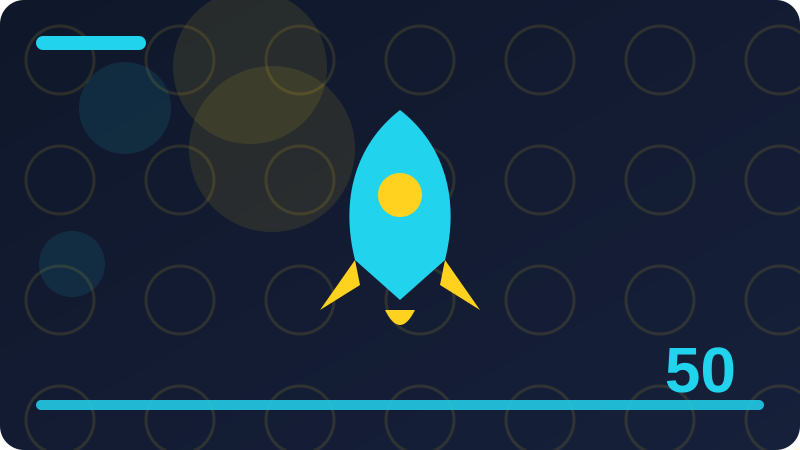

Chapter 50: Capstone Finish, Portfolio and Next Steps

Section 1
This section is about recap: the finished PyDay, unchanged in design. It belongs in Capstone Finish, Portfolio and Next Steps, where the wider theme is finishing PyDay, documenting it, and showing it in a portfolio. Read it slowly, try the ideas on a small example of your own, and notice how recap: the finished PyDay, unchanged in design relates to work you have already done. The aim is not to collect a definition you can recite, but to build a working understanding of recap: the finished PyDay, unchanged in design that you can use when a real program needs it. As you read, keep a notebook or a scratch file open, jot down questions, and test any claim that surprises you, because active practice turns reading into skill. Throughout this capstone, the project stays exactly the same: PyDay, a command-line personal task-and-notes manager in pure Python 3 standard library only, in a single file called pyday.py, with its data in pyday-data.json. Its commands are add-task, list-tasks, complete-task, add-note, list-notes, and overview, where overview shows counts of tasks and notes and how many tasks are done versus pending. There is no framework, no server, no external package, no database, and no graphical interface, and that specification does not change from planning through to the finished program.
Consider the trade-off behind recap: the finished PyDay, unchanged in design: every choice that makes one thing easier tends to make something else harder, so name both sides before you decide. If you explain recap: the finished PyDay, unchanged in design to a fellow learner, listen for the point where they hesitate, because that hesitation usually marks the exact idea that needs a clearer example. Real projects rarely fail because one person did not know recap: the finished PyDay, unchanged in design; they fail because nobody agreed how it should be done, so shared agreement matters as much as individual skill. Try recap: the finished PyDay, unchanged in design on a tiny project of your own before you need it under pressure, so that mistakes happen where they are cheap and easy to fix. When something does not work with recap: the finished PyDay, unchanged in design, narrow the problem down: change one thing at a time, re-run the smallest possible check, and write down what each change taught you. Good practitioners of recap: the finished PyDay, unchanged in design leave traces for the next person: clear names, a brief comment where the reason is not obvious, and a test or example that shows the intended behaviour.
To finish, return to recap: the finished PyDay, unchanged in design and summarise it in two or three sentences of your own, without looking back at this section. If you cannot, re-read the part that felt least clear and try a fresh small example, because a second attempt often succeeds where the first one only introduced the idea. Then move on with confidence: you do not need perfection here, only a solid, usable grasp that later practice will deepen.
Check: How would you explain recap: the finished PyDay, unchanged in design to another learner, and what small example would you use?
Section 2
This section is about testing PyDay by hand, end to end. It belongs in Capstone Finish, Portfolio and Next Steps, where the wider theme is finishing PyDay, documenting it, and showing it in a portfolio. Read it slowly, try the ideas on a small example of your own, and notice how testing PyDay by hand, end to end relates to work you have already done. The aim is not to collect a definition you can recite, but to build a working understanding of testing PyDay by hand, end to end that you can use when a real program needs it. As you read, keep a notebook or a scratch file open, jot down questions, and test any claim that surprises you, because active practice turns reading into skill. Throughout this capstone, the project stays exactly the same: PyDay, a command-line personal task-and-notes manager in pure Python 3 standard library only, in a single file called pyday.py, with its data in pyday-data.json. Its commands are add-task, list-tasks, complete-task, add-note, list-notes, and overview, where overview shows counts of tasks and notes and how many tasks are done versus pending. There is no framework, no server, no external package, no database, and no graphical interface, and that specification does not change from planning through to the finished program.
Ask yourself who benefits from testing PyDay by hand, end to end in this particular project, and who pays the cost in extra time or complexity, because a technique is only worth it when the benefit is real. A helpful exercise with testing PyDay by hand, end to end is to compare two versions of the same small program, one that uses the idea well and one that does not, and to list exactly what differs. Documentation, naming, and structure all support testing PyDay by hand, end to end, and none of them is a substitute for the others; together they make a project that other people can actually join. When you review your own work on testing PyDay by hand, end to end, read it as a stranger would, from the top, without remembering what you meant, and mark every place where you have to guess. The Python 3 standard library and the wider community both favour testing PyDay by hand, end to end done simply and explicitly, which is why short, readable solutions tend to age better than elaborate ones. If testing PyDay by hand, end to end feels confusing, break it into three questions: what is the input, what should the output be, and what rule connects them, then answer each question separately.
To finish, return to testing PyDay by hand, end to end and summarise it in two or three sentences of your own, without looking back at this section. If you cannot, re-read the part that felt least clear and try a fresh small example, because a second attempt often succeeds where the first one only introduced the idea. Then move on with confidence: you do not need perfection here, only a solid, usable grasp that later practice will deepen.
Check: What goes wrong most easily with testing PyDay by hand, end to end, and how would you spot that problem early?
Section 3
This section is about a hand-test script for all six commands. It belongs in Capstone Finish, Portfolio and Next Steps, where the wider theme is finishing PyDay, documenting it, and showing it in a portfolio. Read it slowly, try the ideas on a small example of your own, and notice how a hand-test script for all six commands relates to work you have already done. The aim is not to collect a definition you can recite, but to build a working understanding of a hand-test script for all six commands that you can use when a real program needs it. As you read, keep a notebook or a scratch file open, jot down questions, and test any claim that surprises you, because active practice turns reading into skill. Throughout this capstone, the project stays exactly the same: PyDay, a command-line personal task-and-notes manager in pure Python 3 standard library only, in a single file called pyday.py, with its data in pyday-data.json. Its commands are add-task, list-tasks, complete-task, add-note, list-notes, and overview, where overview shows counts of tasks and notes and how many tasks are done versus pending. There is no framework, no server, no external package, no database, and no graphical interface, and that specification does not change from planning through to the finished program.
Keep a hand-test script for all six commands close to the problem it solves, and resist the temptation to build a general system for problems you do not yet have, since unused generality is a maintenance burden. Feedback improves a hand-test script for all six commands faster than solitary practice alone, so show your work early, ask specific questions, and treat corrections as information rather than criticism. A reliable sign that you are getting a hand-test script for all six commands right is that you can change one part of a program without fearing that an unrelated part will quietly break. Remember that a hand-test script for all six commands is a means, not an end: the goal is a program that works, can be understood, and can be changed safely, and every technique should be judged against that goal. In a team, a hand-test script for all six commands works best when everyone can see the same standard, the same examples, and the same reasons, rather than relying on unwritten rules known only to a few people. When you finish practising a hand-test script for all six commands, tidy up: remove experiments you no longer need, keep the example that taught you most, and write one sentence about what you will do differently next time.
To finish, return to a hand-test script for all six commands and summarise it in two or three sentences of your own, without looking back at this section. If you cannot, re-read the part that felt least clear and try a fresh small example, because a second attempt often succeeds where the first one only introduced the idea. Then move on with confidence: you do not need perfection here, only a solid, usable grasp that later practice will deepen.
Check: When would you choose a hand-test script for all six commands, and when would a simpler approach be the better choice?
Section 4
This section is about testing with a fresh pyday-data.json. It belongs in Capstone Finish, Portfolio and Next Steps, where the wider theme is finishing PyDay, documenting it, and showing it in a portfolio. Read it slowly, try the ideas on a small example of your own, and notice how testing with a fresh pyday-data.json relates to work you have already done. The aim is not to collect a definition you can recite, but to build a working understanding of testing with a fresh pyday-data.json that you can use when a real program needs it. As you read, keep a notebook or a scratch file open, jot down questions, and test any claim that surprises you, because active practice turns reading into skill. Throughout this capstone, the project stays exactly the same: PyDay, a command-line personal task-and-notes manager in pure Python 3 standard library only, in a single file called pyday.py, with its data in pyday-data.json. Its commands are add-task, list-tasks, complete-task, add-note, list-notes, and overview, where overview shows counts of tasks and notes and how many tasks are done versus pending. There is no framework, no server, no external package, no database, and no graphical interface, and that specification does not change from planning through to the finished program.
Look for the simplest version of testing with a fresh pyday-data.json that still solves the problem in front of you, and only reach for a more powerful version when the simple one has clearly run out of room. Finally, connect testing with a fresh pyday-data.json to work you have already done: notice where an earlier chapter's idea reappears here in a new form, because that recognition is what turns separate lessons into real skill. One useful way to think about testing with a fresh pyday-data.json is to ask what it changes for the person who will read, use, or maintain the work afterwards, not only for the person who writes it first. Beginners often treat testing with a fresh pyday-data.json as a single trick to memorise, but in real work it is a habit: a small decision, repeated consistently, that keeps a growing project understandable. A good test of whether you understand testing with a fresh pyday-data.json is whether you can describe it in plain language, give a small example, and explain what goes wrong when it is missing. In Python 3, testing with a fresh pyday-data.json usually rewards clarity over cleverness, because code is read far more often than it is written, and the next reader may be you in six months.
To finish, return to testing with a fresh pyday-data.json and summarise it in two or three sentences of your own, without looking back at this section. If you cannot, re-read the part that felt least clear and try a fresh small example, because a second attempt often succeeds where the first one only introduced the idea. Then move on with confidence: you do not need perfection here, only a solid, usable grasp that later practice will deepen.
Check: What would a good, small practice exercise for testing with a fresh pyday-data.json look like, and what would success mean?
Section 5
This section is about testing with existing data. It belongs in Capstone Finish, Portfolio and Next Steps, where the wider theme is finishing PyDay, documenting it, and showing it in a portfolio. Read it slowly, try the ideas on a small example of your own, and notice how testing with existing data relates to work you have already done. The aim is not to collect a definition you can recite, but to build a working understanding of testing with existing data that you can use when a real program needs it. As you read, keep a notebook or a scratch file open, jot down questions, and test any claim that surprises you, because active practice turns reading into skill. Throughout this capstone, the project stays exactly the same: PyDay, a command-line personal task-and-notes manager in pure Python 3 standard library only, in a single file called pyday.py, with its data in pyday-data.json. Its commands are add-task, list-tasks, complete-task, add-note, list-notes, and overview, where overview shows counts of tasks and notes and how many tasks are done versus pending. There is no framework, no server, no external package, no database, and no graphical interface, and that specification does not change from planning through to the finished program.
A common mistake with testing with existing data is to add complexity before the simple version works, which makes it hard to tell whether a problem comes from the new idea or from an earlier error. It helps to keep a short note of what you tried with testing with existing data, what happened, and what you changed, because that record turns a confusing afternoon into a lesson you can reuse. Consider the trade-off behind testing with existing data: every choice that makes one thing easier tends to make something else harder, so name both sides before you decide. If you explain testing with existing data to a fellow learner, listen for the point where they hesitate, because that hesitation usually marks the exact idea that needs a clearer example. Real projects rarely fail because one person did not know testing with existing data; they fail because nobody agreed how it should be done, so shared agreement matters as much as individual skill. Try testing with existing data on a tiny project of your own before you need it under pressure, so that mistakes happen where they are cheap and easy to fix.
When something does not work with testing with existing data, narrow the problem down: change one thing at a time, re-run the smallest possible check, and write down what each change taught you.
To finish, return to testing with existing data and summarise it in two or three sentences of your own, without looking back at this section. If you cannot, re-read the part that felt least clear and try a fresh small example, because a second attempt often succeeds where the first one only introduced the idea. Then move on with confidence: you do not need perfection here, only a solid, usable grasp that later practice will deepen.
Check: How does testing with existing data connect to the other ideas in this chapter, and why does that connection matter?
Section 6
This section is about testing error cases again. It belongs in Capstone Finish, Portfolio and Next Steps, where the wider theme is finishing PyDay, documenting it, and showing it in a portfolio. Read it slowly, try the ideas on a small example of your own, and notice how testing error cases again relates to work you have already done. The aim is not to collect a definition you can recite, but to build a working understanding of testing error cases again that you can use when a real program needs it. As you read, keep a notebook or a scratch file open, jot down questions, and test any claim that surprises you, because active practice turns reading into skill. Throughout this capstone, the project stays exactly the same: PyDay, a command-line personal task-and-notes manager in pure Python 3 standard library only, in a single file called pyday.py, with its data in pyday-data.json. Its commands are add-task, list-tasks, complete-task, add-note, list-notes, and overview, where overview shows counts of tasks and notes and how many tasks are done versus pending. There is no framework, no server, no external package, no database, and no graphical interface, and that specification does not change from planning through to the finished program.
Good practitioners of testing error cases again leave traces for the next person: clear names, a brief comment where the reason is not obvious, and a test or example that shows the intended behaviour. You do not need to master every detail of testing error cases again at once; learn the core idea well, use it regularly, and let the finer details arrive as real problems demand them. Ask yourself who benefits from testing error cases again in this particular project, and who pays the cost in extra time or complexity, because a technique is only worth it when the benefit is real. A helpful exercise with testing error cases again is to compare two versions of the same small program, one that uses the idea well and one that does not, and to list exactly what differs. Documentation, naming, and structure all support testing error cases again, and none of them is a substitute for the others; together they make a project that other people can actually join. When you review your own work on testing error cases again, read it as a stranger would, from the top, without remembering what you meant, and mark every place where you have to guess.
The Python 3 standard library and the wider community both favour testing error cases again done simply and explicitly, which is why short, readable solutions tend to age better than elaborate ones.
To finish, return to testing error cases again and summarise it in two or three sentences of your own, without looking back at this section. If you cannot, re-read the part that felt least clear and try a fresh small example, because a second attempt often succeeds where the first one only introduced the idea. Then move on with confidence: you do not need perfection here, only a solid, usable grasp that later practice will deepen.
Check: How would you explain testing error cases again to another learner, and what small example would you use?
Section 7
This section is about fixing the last rough edges. It belongs in Capstone Finish, Portfolio and Next Steps, where the wider theme is finishing PyDay, documenting it, and showing it in a portfolio. Read it slowly, try the ideas on a small example of your own, and notice how fixing the last rough edges relates to work you have already done. The aim is not to collect a definition you can recite, but to build a working understanding of fixing the last rough edges that you can use when a real program needs it. As you read, keep a notebook or a scratch file open, jot down questions, and test any claim that surprises you, because active practice turns reading into skill. Throughout this capstone, the project stays exactly the same: PyDay, a command-line personal task-and-notes manager in pure Python 3 standard library only, in a single file called pyday.py, with its data in pyday-data.json. Its commands are add-task, list-tasks, complete-task, add-note, list-notes, and overview, where overview shows counts of tasks and notes and how many tasks are done versus pending. There is no framework, no server, no external package, no database, and no graphical interface, and that specification does not change from planning through to the finished program.
If fixing the last rough edges feels confusing, break it into three questions: what is the input, what should the output be, and what rule connects them, then answer each question separately. Planning helps with fixing the last rough edges just as much as coding does, because ten minutes spent sketching the shape of the solution often saves an hour of rewriting later. Keep fixing the last rough edges close to the problem it solves, and resist the temptation to build a general system for problems you do not yet have, since unused generality is a maintenance burden. Feedback improves fixing the last rough edges faster than solitary practice alone, so show your work early, ask specific questions, and treat corrections as information rather than criticism. A reliable sign that you are getting fixing the last rough edges right is that you can change one part of a program without fearing that an unrelated part will quietly break. Remember that fixing the last rough edges is a means, not an end: the goal is a program that works, can be understood, and can be changed safely, and every technique should be judged against that goal.
In a team, fixing the last rough edges works best when everyone can see the same standard, the same examples, and the same reasons, rather than relying on unwritten rules known only to a few people.
To finish, return to fixing the last rough edges and summarise it in two or three sentences of your own, without looking back at this section. If you cannot, re-read the part that felt least clear and try a fresh small example, because a second attempt often succeeds where the first one only introduced the idea. Then move on with confidence: you do not need perfection here, only a solid, usable grasp that later practice will deepen.
Check: What goes wrong most easily with fixing the last rough edges, and how would you spot that problem early?
Section 8
This section is about tidying pyday.py for a reader. It belongs in Capstone Finish, Portfolio and Next Steps, where the wider theme is finishing PyDay, documenting it, and showing it in a portfolio. Read it slowly, try the ideas on a small example of your own, and notice how tidying pyday.py for a reader relates to work you have already done. The aim is not to collect a definition you can recite, but to build a working understanding of tidying pyday.py for a reader that you can use when a real program needs it. As you read, keep a notebook or a scratch file open, jot down questions, and test any claim that surprises you, because active practice turns reading into skill. Throughout this capstone, the project stays exactly the same: PyDay, a command-line personal task-and-notes manager in pure Python 3 standard library only, in a single file called pyday.py, with its data in pyday-data.json. Its commands are add-task, list-tasks, complete-task, add-note, list-notes, and overview, where overview shows counts of tasks and notes and how many tasks are done versus pending. There is no framework, no server, no external package, no database, and no graphical interface, and that specification does not change from planning through to the finished program.
When you finish practising tidying pyday.py for a reader, tidy up: remove experiments you no longer need, keep the example that taught you most, and write one sentence about what you will do differently next time. The difference between knowing about tidying pyday.py for a reader and being able to use it is practice under realistic conditions, so build something small, break it deliberately, and fix it again. Look for the simplest version of tidying pyday.py for a reader that still solves the problem in front of you, and only reach for a more powerful version when the simple one has clearly run out of room. Finally, connect tidying pyday.py for a reader to work you have already done: notice where an earlier chapter's idea reappears here in a new form, because that recognition is what turns separate lessons into real skill. One useful way to think about tidying pyday.py for a reader is to ask what it changes for the person who will read, use, or maintain the work afterwards, not only for the person who writes it first. Beginners often treat tidying pyday.py for a reader as a single trick to memorise, but in real work it is a habit: a small decision, repeated consistently, that keeps a growing project understandable.
To finish, return to tidying pyday.py for a reader and summarise it in two or three sentences of your own, without looking back at this section. If you cannot, re-read the part that felt least clear and try a fresh small example, because a second attempt often succeeds where the first one only introduced the idea. Then move on with confidence: you do not need perfection here, only a solid, usable grasp that later practice will deepen.
Check: When would you choose tidying pyday.py for a reader, and when would a simpler approach be the better choice?
Section 9
This section is about final naming and message review. It belongs in Capstone Finish, Portfolio and Next Steps, where the wider theme is finishing PyDay, documenting it, and showing it in a portfolio. Read it slowly, try the ideas on a small example of your own, and notice how final naming and message review relates to work you have already done. The aim is not to collect a definition you can recite, but to build a working understanding of final naming and message review that you can use when a real program needs it. As you read, keep a notebook or a scratch file open, jot down questions, and test any claim that surprises you, because active practice turns reading into skill. Throughout this capstone, the project stays exactly the same: PyDay, a command-line personal task-and-notes manager in pure Python 3 standard library only, in a single file called pyday.py, with its data in pyday-data.json. Its commands are add-task, list-tasks, complete-task, add-note, list-notes, and overview, where overview shows counts of tasks and notes and how many tasks are done versus pending. There is no framework, no server, no external package, no database, and no graphical interface, and that specification does not change from planning through to the finished program.
In Python 3, final naming and message review usually rewards clarity over cleverness, because code is read far more often than it is written, and the next reader may be you in six months. When you practise final naming and message review, start with the smallest case that still shows the idea, check that it behaves as you expect, and only then add the next complication. A common mistake with final naming and message review is to add complexity before the simple version works, which makes it hard to tell whether a problem comes from the new idea or from an earlier error. It helps to keep a short note of what you tried with final naming and message review, what happened, and what you changed, because that record turns a confusing afternoon into a lesson you can reuse. Consider the trade-off behind final naming and message review: every choice that makes one thing easier tends to make something else harder, so name both sides before you decide. If you explain final naming and message review to a fellow learner, listen for the point where they hesitate, because that hesitation usually marks the exact idea that needs a clearer example.
Real projects rarely fail because one person did not know final naming and message review; they fail because nobody agreed how it should be done, so shared agreement matters as much as individual skill.
To finish, return to final naming and message review and summarise it in two or three sentences of your own, without looking back at this section. If you cannot, re-read the part that felt least clear and try a fresh small example, because a second attempt often succeeds where the first one only introduced the idea. Then move on with confidence: you do not need perfection here, only a solid, usable grasp that later practice will deepen.
Check: What would a good, small practice exercise for final naming and message review look like, and what would success mean?
Section 10
This section is about writing the PyDay README. It belongs in Capstone Finish, Portfolio and Next Steps, where the wider theme is finishing PyDay, documenting it, and showing it in a portfolio. Read it slowly, try the ideas on a small example of your own, and notice how writing the PyDay README relates to work you have already done. The aim is not to collect a definition you can recite, but to build a working understanding of writing the PyDay README that you can use when a real program needs it. As you read, keep a notebook or a scratch file open, jot down questions, and test any claim that surprises you, because active practice turns reading into skill. Throughout this capstone, the project stays exactly the same: PyDay, a command-line personal task-and-notes manager in pure Python 3 standard library only, in a single file called pyday.py, with its data in pyday-data.json. Its commands are add-task, list-tasks, complete-task, add-note, list-notes, and overview, where overview shows counts of tasks and notes and how many tasks are done versus pending. There is no framework, no server, no external package, no database, and no graphical interface, and that specification does not change from planning through to the finished program.
Try writing the PyDay README on a tiny project of your own before you need it under pressure, so that mistakes happen where they are cheap and easy to fix. When something does not work with writing the PyDay README, narrow the problem down: change one thing at a time, re-run the smallest possible check, and write down what each change taught you. Good practitioners of writing the PyDay README leave traces for the next person: clear names, a brief comment where the reason is not obvious, and a test or example that shows the intended behaviour. You do not need to master every detail of writing the PyDay README at once; learn the core idea well, use it regularly, and let the finer details arrive as real problems demand them. Ask yourself who benefits from writing the PyDay README in this particular project, and who pays the cost in extra time or complexity, because a technique is only worth it when the benefit is real. A helpful exercise with writing the PyDay README is to compare two versions of the same small program, one that uses the idea well and one that does not, and to list exactly what differs.
Documentation, naming, and structure all support writing the PyDay README, and none of them is a substitute for the others; together they make a project that other people can actually join.
To finish, return to writing the PyDay README and summarise it in two or three sentences of your own, without looking back at this section. If you cannot, re-read the part that felt least clear and try a fresh small example, because a second attempt often succeeds where the first one only introduced the idea. Then move on with confidence: you do not need perfection here, only a solid, usable grasp that later practice will deepen.
Check: How does writing the PyDay README connect to the other ideas in this chapter, and why does that connection matter?
Section 11
This section is about rEADME: what PyDay is, in one paragraph. It belongs in Capstone Finish, Portfolio and Next Steps, where the wider theme is finishing PyDay, documenting it, and showing it in a portfolio. Read it slowly, try the ideas on a small example of your own, and notice how rEADME: what PyDay is, in one paragraph relates to work you have already done. The aim is not to collect a definition you can recite, but to build a working understanding of rEADME: what PyDay is, in one paragraph that you can use when a real program needs it. As you read, keep a notebook or a scratch file open, jot down questions, and test any claim that surprises you, because active practice turns reading into skill. Throughout this capstone, the project stays exactly the same: PyDay, a command-line personal task-and-notes manager in pure Python 3 standard library only, in a single file called pyday.py, with its data in pyday-data.json. Its commands are add-task, list-tasks, complete-task, add-note, list-notes, and overview, where overview shows counts of tasks and notes and how many tasks are done versus pending. There is no framework, no server, no external package, no database, and no graphical interface, and that specification does not change from planning through to the finished program.
When you review your own work on rEADME: what PyDay is, in one paragraph, read it as a stranger would, from the top, without remembering what you meant, and mark every place where you have to guess. The Python 3 standard library and the wider community both favour rEADME: what PyDay is, in one paragraph done simply and explicitly, which is why short, readable solutions tend to age better than elaborate ones. If rEADME: what PyDay is, in one paragraph feels confusing, break it into three questions: what is the input, what should the output be, and what rule connects them, then answer each question separately. Planning helps with rEADME: what PyDay is, in one paragraph just as much as coding does, because ten minutes spent sketching the shape of the solution often saves an hour of rewriting later. Keep rEADME: what PyDay is, in one paragraph close to the problem it solves, and resist the temptation to build a general system for problems you do not yet have, since unused generality is a maintenance burden. Feedback improves rEADME: what PyDay is, in one paragraph faster than solitary practice alone, so show your work early, ask specific questions, and treat corrections as information rather than criticism.
To finish, return to rEADME: what PyDay is, in one paragraph and summarise it in two or three sentences of your own, without looking back at this section. If you cannot, re-read the part that felt least clear and try a fresh small example, because a second attempt often succeeds where the first one only introduced the idea. Then move on with confidence: you do not need perfection here, only a solid, usable grasp that later practice will deepen.
Check: How would you explain rEADME: what PyDay is, in one paragraph to another learner, and what small example would you use?
Section 12
This section is about rEADME: how to run pyday.py. It belongs in Capstone Finish, Portfolio and Next Steps, where the wider theme is finishing PyDay, documenting it, and showing it in a portfolio. Read it slowly, try the ideas on a small example of your own, and notice how rEADME: how to run pyday.py relates to work you have already done. The aim is not to collect a definition you can recite, but to build a working understanding of rEADME: how to run pyday.py that you can use when a real program needs it. As you read, keep a notebook or a scratch file open, jot down questions, and test any claim that surprises you, because active practice turns reading into skill. Throughout this capstone, the project stays exactly the same: PyDay, a command-line personal task-and-notes manager in pure Python 3 standard library only, in a single file called pyday.py, with its data in pyday-data.json. Its commands are add-task, list-tasks, complete-task, add-note, list-notes, and overview, where overview shows counts of tasks and notes and how many tasks are done versus pending. There is no framework, no server, no external package, no database, and no graphical interface, and that specification does not change from planning through to the finished program.
Remember that rEADME: how to run pyday.py is a means, not an end: the goal is a program that works, can be understood, and can be changed safely, and every technique should be judged against that goal. In a team, rEADME: how to run pyday.py works best when everyone can see the same standard, the same examples, and the same reasons, rather than relying on unwritten rules known only to a few people. When you finish practising rEADME: how to run pyday.py, tidy up: remove experiments you no longer need, keep the example that taught you most, and write one sentence about what you will do differently next time. The difference between knowing about rEADME: how to run pyday.py and being able to use it is practice under realistic conditions, so build something small, break it deliberately, and fix it again. Look for the simplest version of rEADME: how to run pyday.py that still solves the problem in front of you, and only reach for a more powerful version when the simple one has clearly run out of room. Finally, connect rEADME: how to run pyday.py to work you have already done: notice where an earlier chapter's idea reappears here in a new form, because that recognition is what turns separate lessons into real skill.
To finish, return to rEADME: how to run pyday.py and summarise it in two or three sentences of your own, without looking back at this section. If you cannot, re-read the part that felt least clear and try a fresh small example, because a second attempt often succeeds where the first one only introduced the idea. Then move on with confidence: you do not need perfection here, only a solid, usable grasp that later practice will deepen.
Check: What goes wrong most easily with rEADME: how to run pyday.py, and how would you spot that problem early?
Section 13
This section is about rEADME: the six commands, with examples. It belongs in Capstone Finish, Portfolio and Next Steps, where the wider theme is finishing PyDay, documenting it, and showing it in a portfolio. Read it slowly, try the ideas on a small example of your own, and notice how rEADME: the six commands, with examples relates to work you have already done. The aim is not to collect a definition you can recite, but to build a working understanding of rEADME: the six commands, with examples that you can use when a real program needs it. As you read, keep a notebook or a scratch file open, jot down questions, and test any claim that surprises you, because active practice turns reading into skill. Throughout this capstone, the project stays exactly the same: PyDay, a command-line personal task-and-notes manager in pure Python 3 standard library only, in a single file called pyday.py, with its data in pyday-data.json. Its commands are add-task, list-tasks, complete-task, add-note, list-notes, and overview, where overview shows counts of tasks and notes and how many tasks are done versus pending. There is no framework, no server, no external package, no database, and no graphical interface, and that specification does not change from planning through to the finished program.
Beginners often treat rEADME: the six commands, with examples as a single trick to memorise, but in real work it is a habit: a small decision, repeated consistently, that keeps a growing project understandable. A good test of whether you understand rEADME: the six commands, with examples is whether you can describe it in plain language, give a small example, and explain what goes wrong when it is missing. In Python 3, rEADME: the six commands, with examples usually rewards clarity over cleverness, because code is read far more often than it is written, and the next reader may be you in six months. When you practise rEADME: the six commands, with examples, start with the smallest case that still shows the idea, check that it behaves as you expect, and only then add the next complication. A common mistake with rEADME: the six commands, with examples is to add complexity before the simple version works, which makes it hard to tell whether a problem comes from the new idea or from an earlier error. It helps to keep a short note of what you tried with rEADME: the six commands, with examples, what happened, and what you changed, because that record turns a confusing afternoon into a lesson you can reuse.
To finish, return to rEADME: the six commands, with examples and summarise it in two or three sentences of your own, without looking back at this section. If you cannot, re-read the part that felt least clear and try a fresh small example, because a second attempt often succeeds where the first one only introduced the idea. Then move on with confidence: you do not need perfection here, only a solid, usable grasp that later practice will deepen.
Check: When would you choose rEADME: the six commands, with examples, and when would a simpler approach be the better choice?
Section 14
This section is about rEADME: pyday-data.json, explained. It belongs in Capstone Finish, Portfolio and Next Steps, where the wider theme is finishing PyDay, documenting it, and showing it in a portfolio. Read it slowly, try the ideas on a small example of your own, and notice how rEADME: pyday-data.json, explained relates to work you have already done. The aim is not to collect a definition you can recite, but to build a working understanding of rEADME: pyday-data.json, explained that you can use when a real program needs it. As you read, keep a notebook or a scratch file open, jot down questions, and test any claim that surprises you, because active practice turns reading into skill. Throughout this capstone, the project stays exactly the same: PyDay, a command-line personal task-and-notes manager in pure Python 3 standard library only, in a single file called pyday.py, with its data in pyday-data.json. Its commands are add-task, list-tasks, complete-task, add-note, list-notes, and overview, where overview shows counts of tasks and notes and how many tasks are done versus pending. There is no framework, no server, no external package, no database, and no graphical interface, and that specification does not change from planning through to the finished program.
If you explain rEADME: pyday-data.json, explained to a fellow learner, listen for the point where they hesitate, because that hesitation usually marks the exact idea that needs a clearer example. Real projects rarely fail because one person did not know rEADME: pyday-data.json, explained; they fail because nobody agreed how it should be done, so shared agreement matters as much as individual skill. Try rEADME: pyday-data.json, explained on a tiny project of your own before you need it under pressure, so that mistakes happen where they are cheap and easy to fix. When something does not work with rEADME: pyday-data.json, explained, narrow the problem down: change one thing at a time, re-run the smallest possible check, and write down what each change taught you. Good practitioners of rEADME: pyday-data.json, explained leave traces for the next person: clear names, a brief comment where the reason is not obvious, and a test or example that shows the intended behaviour. You do not need to master every detail of rEADME: pyday-data.json, explained at once; learn the core idea well, use it regularly, and let the finer details arrive as real problems demand them.
Ask yourself who benefits from rEADME: pyday-data.json, explained in this particular project, and who pays the cost in extra time or complexity, because a technique is only worth it when the benefit is real.
To finish, return to rEADME: pyday-data.json, explained and summarise it in two or three sentences of your own, without looking back at this section. If you cannot, re-read the part that felt least clear and try a fresh small example, because a second attempt often succeeds where the first one only introduced the idea. Then move on with confidence: you do not need perfection here, only a solid, usable grasp that later practice will deepen.
Check: What would a good, small practice exercise for rEADME: pyday-data.json, explained look like, and what would success mean?
Section 15
This section is about rEADME: requirements, none beyond Python 3. It belongs in Capstone Finish, Portfolio and Next Steps, where the wider theme is finishing PyDay, documenting it, and showing it in a portfolio. Read it slowly, try the ideas on a small example of your own, and notice how rEADME: requirements, none beyond Python 3 relates to work you have already done. The aim is not to collect a definition you can recite, but to build a working understanding of rEADME: requirements, none beyond Python 3 that you can use when a real program needs it. As you read, keep a notebook or a scratch file open, jot down questions, and test any claim that surprises you, because active practice turns reading into skill. Throughout this capstone, the project stays exactly the same: PyDay, a command-line personal task-and-notes manager in pure Python 3 standard library only, in a single file called pyday.py, with its data in pyday-data.json. Its commands are add-task, list-tasks, complete-task, add-note, list-notes, and overview, where overview shows counts of tasks and notes and how many tasks are done versus pending. There is no framework, no server, no external package, no database, and no graphical interface, and that specification does not change from planning through to the finished program.
A helpful exercise with rEADME: requirements, none beyond Python 3 is to compare two versions of the same small program, one that uses the idea well and one that does not, and to list exactly what differs. Documentation, naming, and structure all support rEADME: requirements, none beyond Python 3, and none of them is a substitute for the others; together they make a project that other people can actually join. When you review your own work on rEADME: requirements, none beyond Python 3, read it as a stranger would, from the top, without remembering what you meant, and mark every place where you have to guess. The Python 3 standard library and the wider community both favour rEADME: requirements, none beyond Python 3 done simply and explicitly, which is why short, readable solutions tend to age better than elaborate ones. If rEADME: requirements, none beyond Python 3 feels confusing, break it into three questions: what is the input, what should the output be, and what rule connects them, then answer each question separately. Planning helps with rEADME: requirements, none beyond Python 3 just as much as coding does, because ten minutes spent sketching the shape of the solution often saves an hour of rewriting later.
To finish, return to rEADME: requirements, none beyond Python 3 and summarise it in two or three sentences of your own, without looking back at this section. If you cannot, re-read the part that felt least clear and try a fresh small example, because a second attempt often succeeds where the first one only introduced the idea. Then move on with confidence: you do not need perfection here, only a solid, usable grasp that later practice will deepen.
Check: How does rEADME: requirements, none beyond Python 3 connect to the other ideas in this chapter, and why does that connection matter?
Section 16
This section is about rEADME: limitations, stated honestly. It belongs in Capstone Finish, Portfolio and Next Steps, where the wider theme is finishing PyDay, documenting it, and showing it in a portfolio. Read it slowly, try the ideas on a small example of your own, and notice how rEADME: limitations, stated honestly relates to work you have already done. The aim is not to collect a definition you can recite, but to build a working understanding of rEADME: limitations, stated honestly that you can use when a real program needs it. As you read, keep a notebook or a scratch file open, jot down questions, and test any claim that surprises you, because active practice turns reading into skill. Throughout this capstone, the project stays exactly the same: PyDay, a command-line personal task-and-notes manager in pure Python 3 standard library only, in a single file called pyday.py, with its data in pyday-data.json. Its commands are add-task, list-tasks, complete-task, add-note, list-notes, and overview, where overview shows counts of tasks and notes and how many tasks are done versus pending. There is no framework, no server, no external package, no database, and no graphical interface, and that specification does not change from planning through to the finished program.
Feedback improves rEADME: limitations, stated honestly faster than solitary practice alone, so show your work early, ask specific questions, and treat corrections as information rather than criticism. A reliable sign that you are getting rEADME: limitations, stated honestly right is that you can change one part of a program without fearing that an unrelated part will quietly break. Remember that rEADME: limitations, stated honestly is a means, not an end: the goal is a program that works, can be understood, and can be changed safely, and every technique should be judged against that goal. In a team, rEADME: limitations, stated honestly works best when everyone can see the same standard, the same examples, and the same reasons, rather than relying on unwritten rules known only to a few people. When you finish practising rEADME: limitations, stated honestly, tidy up: remove experiments you no longer need, keep the example that taught you most, and write one sentence about what you will do differently next time. The difference between knowing about rEADME: limitations, stated honestly and being able to use it is practice under realistic conditions, so build something small, break it deliberately, and fix it again.
Look for the simplest version of rEADME: limitations, stated honestly that still solves the problem in front of you, and only reach for a more powerful version when the simple one has clearly run out of room.
To finish, return to rEADME: limitations, stated honestly and summarise it in two or three sentences of your own, without looking back at this section. If you cannot, re-read the part that felt least clear and try a fresh small example, because a second attempt often succeeds where the first one only introduced the idea. Then move on with confidence: you do not need perfection here, only a solid, usable grasp that later practice will deepen.
Check: How would you explain rEADME: limitations, stated honestly to another learner, and what small example would you use?
Section 17
This section is about rEADME: how to back up your data. It belongs in Capstone Finish, Portfolio and Next Steps, where the wider theme is finishing PyDay, documenting it, and showing it in a portfolio. Read it slowly, try the ideas on a small example of your own, and notice how rEADME: how to back up your data relates to work you have already done. The aim is not to collect a definition you can recite, but to build a working understanding of rEADME: how to back up your data that you can use when a real program needs it. As you read, keep a notebook or a scratch file open, jot down questions, and test any claim that surprises you, because active practice turns reading into skill. Throughout this capstone, the project stays exactly the same: PyDay, a command-line personal task-and-notes manager in pure Python 3 standard library only, in a single file called pyday.py, with its data in pyday-data.json. Its commands are add-task, list-tasks, complete-task, add-note, list-notes, and overview, where overview shows counts of tasks and notes and how many tasks are done versus pending. There is no framework, no server, no external package, no database, and no graphical interface, and that specification does not change from planning through to the finished program.
Finally, connect rEADME: how to back up your data to work you have already done: notice where an earlier chapter's idea reappears here in a new form, because that recognition is what turns separate lessons into real skill. One useful way to think about rEADME: how to back up your data is to ask what it changes for the person who will read, use, or maintain the work afterwards, not only for the person who writes it first. Beginners often treat rEADME: how to back up your data as a single trick to memorise, but in real work it is a habit: a small decision, repeated consistently, that keeps a growing project understandable. A good test of whether you understand rEADME: how to back up your data is whether you can describe it in plain language, give a small example, and explain what goes wrong when it is missing. In Python 3, rEADME: how to back up your data usually rewards clarity over cleverness, because code is read far more often than it is written, and the next reader may be you in six months. When you practise rEADME: how to back up your data, start with the smallest case that still shows the idea, check that it behaves as you expect, and only then add the next complication.
To finish, return to rEADME: how to back up your data and summarise it in two or three sentences of your own, without looking back at this section. If you cannot, re-read the part that felt least clear and try a fresh small example, because a second attempt often succeeds where the first one only introduced the idea. Then move on with confidence: you do not need perfection here, only a solid, usable grasp that later practice will deepen.
Check: What goes wrong most easily with rEADME: how to back up your data, and how would you spot that problem early?
Section 18
This section is about packaging notes for a single-file program. It belongs in Capstone Finish, Portfolio and Next Steps, where the wider theme is finishing PyDay, documenting it, and showing it in a portfolio. Read it slowly, try the ideas on a small example of your own, and notice how packaging notes for a single-file program relates to work you have already done. The aim is not to collect a definition you can recite, but to build a working understanding of packaging notes for a single-file program that you can use when a real program needs it. As you read, keep a notebook or a scratch file open, jot down questions, and test any claim that surprises you, because active practice turns reading into skill. Throughout this capstone, the project stays exactly the same: PyDay, a command-line personal task-and-notes manager in pure Python 3 standard library only, in a single file called pyday.py, with its data in pyday-data.json. Its commands are add-task, list-tasks, complete-task, add-note, list-notes, and overview, where overview shows counts of tasks and notes and how many tasks are done versus pending. There is no framework, no server, no external package, no database, and no graphical interface, and that specification does not change from planning through to the finished program.
It helps to keep a short note of what you tried with packaging notes for a single-file program, what happened, and what you changed, because that record turns a confusing afternoon into a lesson you can reuse. Consider the trade-off behind packaging notes for a single-file program: every choice that makes one thing easier tends to make something else harder, so name both sides before you decide. If you explain packaging notes for a single-file program to a fellow learner, listen for the point where they hesitate, because that hesitation usually marks the exact idea that needs a clearer example. Real projects rarely fail because one person did not know packaging notes for a single-file program; they fail because nobody agreed how it should be done, so shared agreement matters as much as individual skill. Try packaging notes for a single-file program on a tiny project of your own before you need it under pressure, so that mistakes happen where they are cheap and easy to fix. When something does not work with packaging notes for a single-file program, narrow the problem down: change one thing at a time, re-run the smallest possible check, and write down what each change taught you.
Good practitioners of packaging notes for a single-file program leave traces for the next person: clear names, a brief comment where the reason is not obvious, and a test or example that shows the intended behaviour.
To finish, return to packaging notes for a single-file program and summarise it in two or three sentences of your own, without looking back at this section. If you cannot, re-read the part that felt least clear and try a fresh small example, because a second attempt often succeeds where the first one only introduced the idea. Then move on with confidence: you do not need perfection here, only a solid, usable grasp that later practice will deepen.
Check: When would you choose packaging notes for a single-file program, and when would a simpler approach be the better choice?
Section 19
This section is about sharing pyday.py with another person. It belongs in Capstone Finish, Portfolio and Next Steps, where the wider theme is finishing PyDay, documenting it, and showing it in a portfolio. Read it slowly, try the ideas on a small example of your own, and notice how sharing pyday.py with another person relates to work you have already done. The aim is not to collect a definition you can recite, but to build a working understanding of sharing pyday.py with another person that you can use when a real program needs it. As you read, keep a notebook or a scratch file open, jot down questions, and test any claim that surprises you, because active practice turns reading into skill. Throughout this capstone, the project stays exactly the same: PyDay, a command-line personal task-and-notes manager in pure Python 3 standard library only, in a single file called pyday.py, with its data in pyday-data.json. Its commands are add-task, list-tasks, complete-task, add-note, list-notes, and overview, where overview shows counts of tasks and notes and how many tasks are done versus pending. There is no framework, no server, no external package, no database, and no graphical interface, and that specification does not change from planning through to the finished program.
You do not need to master every detail of sharing pyday.py with another person at once; learn the core idea well, use it regularly, and let the finer details arrive as real problems demand them. Ask yourself who benefits from sharing pyday.py with another person in this particular project, and who pays the cost in extra time or complexity, because a technique is only worth it when the benefit is real. A helpful exercise with sharing pyday.py with another person is to compare two versions of the same small program, one that uses the idea well and one that does not, and to list exactly what differs. Documentation, naming, and structure all support sharing pyday.py with another person, and none of them is a substitute for the others; together they make a project that other people can actually join. When you review your own work on sharing pyday.py with another person, read it as a stranger would, from the top, without remembering what you meant, and mark every place where you have to guess. The Python 3 standard library and the wider community both favour sharing pyday.py with another person done simply and explicitly, which is why short, readable solutions tend to age better than elaborate ones.
If sharing pyday.py with another person feels confusing, break it into three questions: what is the input, what should the output be, and what rule connects them, then answer each question separately.
To finish, return to sharing pyday.py with another person and summarise it in two or three sentences of your own, without looking back at this section. If you cannot, re-read the part that felt least clear and try a fresh small example, because a second attempt often succeeds where the first one only introduced the idea. Then move on with confidence: you do not need perfection here, only a solid, usable grasp that later practice will deepen.
Check: What would a good, small practice exercise for sharing pyday.py with another person look like, and what would success mean?
Section 20
This section is about running PyDay on another machine. It belongs in Capstone Finish, Portfolio and Next Steps, where the wider theme is finishing PyDay, documenting it, and showing it in a portfolio. Read it slowly, try the ideas on a small example of your own, and notice how running PyDay on another machine relates to work you have already done. The aim is not to collect a definition you can recite, but to build a working understanding of running PyDay on another machine that you can use when a real program needs it. As you read, keep a notebook or a scratch file open, jot down questions, and test any claim that surprises you, because active practice turns reading into skill. Throughout this capstone, the project stays exactly the same: PyDay, a command-line personal task-and-notes manager in pure Python 3 standard library only, in a single file called pyday.py, with its data in pyday-data.json. Its commands are add-task, list-tasks, complete-task, add-note, list-notes, and overview, where overview shows counts of tasks and notes and how many tasks are done versus pending. There is no framework, no server, no external package, no database, and no graphical interface, and that specification does not change from planning through to the finished program.
Planning helps with running PyDay on another machine just as much as coding does, because ten minutes spent sketching the shape of the solution often saves an hour of rewriting later. Keep running PyDay on another machine close to the problem it solves, and resist the temptation to build a general system for problems you do not yet have, since unused generality is a maintenance burden. Feedback improves running PyDay on another machine faster than solitary practice alone, so show your work early, ask specific questions, and treat corrections as information rather than criticism. A reliable sign that you are getting running PyDay on another machine right is that you can change one part of a program without fearing that an unrelated part will quietly break. Remember that running PyDay on another machine is a means, not an end: the goal is a program that works, can be understood, and can be changed safely, and every technique should be judged against that goal. In a team, running PyDay on another machine works best when everyone can see the same standard, the same examples, and the same reasons, rather than relying on unwritten rules known only to a few people.
When you finish practising running PyDay on another machine, tidy up: remove experiments you no longer need, keep the example that taught you most, and write one sentence about what you will do differently next time.
To finish, return to running PyDay on another machine and summarise it in two or three sentences of your own, without looking back at this section. If you cannot, re-read the part that felt least clear and try a fresh small example, because a second attempt often succeeds where the first one only introduced the idea. Then move on with confidence: you do not need perfection here, only a solid, usable grasp that later practice will deepen.
Check: How does running PyDay on another machine connect to the other ideas in this chapter, and why does that connection matter?
Section 21
This section is about what to do if pyday-data.json is lost. It belongs in Capstone Finish, Portfolio and Next Steps, where the wider theme is finishing PyDay, documenting it, and showing it in a portfolio. Read it slowly, try the ideas on a small example of your own, and notice how what to do if pyday-data.json is lost relates to work you have already done. The aim is not to collect a definition you can recite, but to build a working understanding of what to do if pyday-data.json is lost that you can use when a real program needs it. As you read, keep a notebook or a scratch file open, jot down questions, and test any claim that surprises you, because active practice turns reading into skill. Throughout this capstone, the project stays exactly the same: PyDay, a command-line personal task-and-notes manager in pure Python 3 standard library only, in a single file called pyday.py, with its data in pyday-data.json. Its commands are add-task, list-tasks, complete-task, add-note, list-notes, and overview, where overview shows counts of tasks and notes and how many tasks are done versus pending. There is no framework, no server, no external package, no database, and no graphical interface, and that specification does not change from planning through to the finished program.
The difference between knowing about what to do if pyday-data.json is lost and being able to use it is practice under realistic conditions, so build something small, break it deliberately, and fix it again. Look for the simplest version of what to do if pyday-data.json is lost that still solves the problem in front of you, and only reach for a more powerful version when the simple one has clearly run out of room. Finally, connect what to do if pyday-data.json is lost to work you have already done: notice where an earlier chapter's idea reappears here in a new form, because that recognition is what turns separate lessons into real skill. One useful way to think about what to do if pyday-data.json is lost is to ask what it changes for the person who will read, use, or maintain the work afterwards, not only for the person who writes it first. Beginners often treat what to do if pyday-data.json is lost as a single trick to memorise, but in real work it is a habit: a small decision, repeated consistently, that keeps a growing project understandable. A good test of whether you understand what to do if pyday-data.json is lost is whether you can describe it in plain language, give a small example, and explain what goes wrong when it is missing.
To finish, return to what to do if pyday-data.json is lost and summarise it in two or three sentences of your own, without looking back at this section. If you cannot, re-read the part that felt least clear and try a fresh small example, because a second attempt often succeeds where the first one only introduced the idea. Then move on with confidence: you do not need perfection here, only a solid, usable grasp that later practice will deepen.
Check: How would you explain what to do if pyday-data.json is lost to another learner, and what small example would you use?
Section 22
This section is about version notes for PyDay, kept simple. It belongs in Capstone Finish, Portfolio and Next Steps, where the wider theme is finishing PyDay, documenting it, and showing it in a portfolio. Read it slowly, try the ideas on a small example of your own, and notice how version notes for PyDay, kept simple relates to work you have already done. The aim is not to collect a definition you can recite, but to build a working understanding of version notes for PyDay, kept simple that you can use when a real program needs it. As you read, keep a notebook or a scratch file open, jot down questions, and test any claim that surprises you, because active practice turns reading into skill. Throughout this capstone, the project stays exactly the same: PyDay, a command-line personal task-and-notes manager in pure Python 3 standard library only, in a single file called pyday.py, with its data in pyday-data.json. Its commands are add-task, list-tasks, complete-task, add-note, list-notes, and overview, where overview shows counts of tasks and notes and how many tasks are done versus pending. There is no framework, no server, no external package, no database, and no graphical interface, and that specification does not change from planning through to the finished program.
When you practise version notes for PyDay, kept simple, start with the smallest case that still shows the idea, check that it behaves as you expect, and only then add the next complication. A common mistake with version notes for PyDay, kept simple is to add complexity before the simple version works, which makes it hard to tell whether a problem comes from the new idea or from an earlier error. It helps to keep a short note of what you tried with version notes for PyDay, kept simple, what happened, and what you changed, because that record turns a confusing afternoon into a lesson you can reuse. Consider the trade-off behind version notes for PyDay, kept simple: every choice that makes one thing easier tends to make something else harder, so name both sides before you decide. If you explain version notes for PyDay, kept simple to a fellow learner, listen for the point where they hesitate, because that hesitation usually marks the exact idea that needs a clearer example. Real projects rarely fail because one person did not know version notes for PyDay, kept simple; they fail because nobody agreed how it should be done, so shared agreement matters as much as individual skill.
To finish, return to version notes for PyDay, kept simple and summarise it in two or three sentences of your own, without looking back at this section. If you cannot, re-read the part that felt least clear and try a fresh small example, because a second attempt often succeeds where the first one only introduced the idea. Then move on with confidence: you do not need perfection here, only a solid, usable grasp that later practice will deepen.
Check: What goes wrong most easily with version notes for PyDay, kept simple, and how would you spot that problem early?
Section 23
This section is about a portfolio write-up for PyDay. It belongs in Capstone Finish, Portfolio and Next Steps, where the wider theme is finishing PyDay, documenting it, and showing it in a portfolio. Read it slowly, try the ideas on a small example of your own, and notice how a portfolio write-up for PyDay relates to work you have already done. The aim is not to collect a definition you can recite, but to build a working understanding of a portfolio write-up for PyDay that you can use when a real program needs it. As you read, keep a notebook or a scratch file open, jot down questions, and test any claim that surprises you, because active practice turns reading into skill. Throughout this capstone, the project stays exactly the same: PyDay, a command-line personal task-and-notes manager in pure Python 3 standard library only, in a single file called pyday.py, with its data in pyday-data.json. Its commands are add-task, list-tasks, complete-task, add-note, list-notes, and overview, where overview shows counts of tasks and notes and how many tasks are done versus pending. There is no framework, no server, no external package, no database, and no graphical interface, and that specification does not change from planning through to the finished program.
When something does not work with a portfolio write-up for PyDay, narrow the problem down: change one thing at a time, re-run the smallest possible check, and write down what each change taught you. Good practitioners of a portfolio write-up for PyDay leave traces for the next person: clear names, a brief comment where the reason is not obvious, and a test or example that shows the intended behaviour. You do not need to master every detail of a portfolio write-up for PyDay at once; learn the core idea well, use it regularly, and let the finer details arrive as real problems demand them. Ask yourself who benefits from a portfolio write-up for PyDay in this particular project, and who pays the cost in extra time or complexity, because a technique is only worth it when the benefit is real. A helpful exercise with a portfolio write-up for PyDay is to compare two versions of the same small program, one that uses the idea well and one that does not, and to list exactly what differs. Documentation, naming, and structure all support a portfolio write-up for PyDay, and none of them is a substitute for the others; together they make a project that other people can actually join.
When you review your own work on a portfolio write-up for PyDay, read it as a stranger would, from the top, without remembering what you meant, and mark every place where you have to guess.
To finish, return to a portfolio write-up for PyDay and summarise it in two or three sentences of your own, without looking back at this section. If you cannot, re-read the part that felt least clear and try a fresh small example, because a second attempt often succeeds where the first one only introduced the idea. Then move on with confidence: you do not need perfection here, only a solid, usable grasp that later practice will deepen.
Check: When would you choose a portfolio write-up for PyDay, and when would a simpler approach be the better choice?
Section 24
This section is about describing the problem PyDay solves. It belongs in Capstone Finish, Portfolio and Next Steps, where the wider theme is finishing PyDay, documenting it, and showing it in a portfolio. Read it slowly, try the ideas on a small example of your own, and notice how describing the problem PyDay solves relates to work you have already done. The aim is not to collect a definition you can recite, but to build a working understanding of describing the problem PyDay solves that you can use when a real program needs it. As you read, keep a notebook or a scratch file open, jot down questions, and test any claim that surprises you, because active practice turns reading into skill. Throughout this capstone, the project stays exactly the same: PyDay, a command-line personal task-and-notes manager in pure Python 3 standard library only, in a single file called pyday.py, with its data in pyday-data.json. Its commands are add-task, list-tasks, complete-task, add-note, list-notes, and overview, where overview shows counts of tasks and notes and how many tasks are done versus pending. There is no framework, no server, no external package, no database, and no graphical interface, and that specification does not change from planning through to the finished program.
The Python 3 standard library and the wider community both favour describing the problem PyDay solves done simply and explicitly, which is why short, readable solutions tend to age better than elaborate ones. If describing the problem PyDay solves feels confusing, break it into three questions: what is the input, what should the output be, and what rule connects them, then answer each question separately. Planning helps with describing the problem PyDay solves just as much as coding does, because ten minutes spent sketching the shape of the solution often saves an hour of rewriting later. Keep describing the problem PyDay solves close to the problem it solves, and resist the temptation to build a general system for problems you do not yet have, since unused generality is a maintenance burden. Feedback improves describing the problem PyDay solves faster than solitary practice alone, so show your work early, ask specific questions, and treat corrections as information rather than criticism. A reliable sign that you are getting describing the problem PyDay solves right is that you can change one part of a program without fearing that an unrelated part will quietly break.
Remember that describing the problem PyDay solves is a means, not an end: the goal is a program that works, can be understood, and can be changed safely, and every technique should be judged against that goal.
To finish, return to describing the problem PyDay solves and summarise it in two or three sentences of your own, without looking back at this section. If you cannot, re-read the part that felt least clear and try a fresh small example, because a second attempt often succeeds where the first one only introduced the idea. Then move on with confidence: you do not need perfection here, only a solid, usable grasp that later practice will deepen.
Check: What would a good, small practice exercise for describing the problem PyDay solves look like, and what would success mean?
Section 25
This section is about describing the design choices in PyDay. It belongs in Capstone Finish, Portfolio and Next Steps, where the wider theme is finishing PyDay, documenting it, and showing it in a portfolio. Read it slowly, try the ideas on a small example of your own, and notice how describing the design choices in PyDay relates to work you have already done. The aim is not to collect a definition you can recite, but to build a working understanding of describing the design choices in PyDay that you can use when a real program needs it. As you read, keep a notebook or a scratch file open, jot down questions, and test any claim that surprises you, because active practice turns reading into skill. Throughout this capstone, the project stays exactly the same: PyDay, a command-line personal task-and-notes manager in pure Python 3 standard library only, in a single file called pyday.py, with its data in pyday-data.json. Its commands are add-task, list-tasks, complete-task, add-note, list-notes, and overview, where overview shows counts of tasks and notes and how many tasks are done versus pending. There is no framework, no server, no external package, no database, and no graphical interface, and that specification does not change from planning through to the finished program.
In a team, describing the design choices in PyDay works best when everyone can see the same standard, the same examples, and the same reasons, rather than relying on unwritten rules known only to a few people. When you finish practising describing the design choices in PyDay, tidy up: remove experiments you no longer need, keep the example that taught you most, and write one sentence about what you will do differently next time. The difference between knowing about describing the design choices in PyDay and being able to use it is practice under realistic conditions, so build something small, break it deliberately, and fix it again. Look for the simplest version of describing the design choices in PyDay that still solves the problem in front of you, and only reach for a more powerful version when the simple one has clearly run out of room. Finally, connect describing the design choices in PyDay to work you have already done: notice where an earlier chapter's idea reappears here in a new form, because that recognition is what turns separate lessons into real skill. One useful way to think about describing the design choices in PyDay is to ask what it changes for the person who will read, use, or maintain the work afterwards, not only for the person who writes it first.
To finish, return to describing the design choices in PyDay and summarise it in two or three sentences of your own, without looking back at this section. If you cannot, re-read the part that felt least clear and try a fresh small example, because a second attempt often succeeds where the first one only introduced the idea. Then move on with confidence: you do not need perfection here, only a solid, usable grasp that later practice will deepen.
Check: How does describing the design choices in PyDay connect to the other ideas in this chapter, and why does that connection matter?
Section 26
This section is about describing what you tested in PyDay. It belongs in Capstone Finish, Portfolio and Next Steps, where the wider theme is finishing PyDay, documenting it, and showing it in a portfolio. Read it slowly, try the ideas on a small example of your own, and notice how describing what you tested in PyDay relates to work you have already done. The aim is not to collect a definition you can recite, but to build a working understanding of describing what you tested in PyDay that you can use when a real program needs it. As you read, keep a notebook or a scratch file open, jot down questions, and test any claim that surprises you, because active practice turns reading into skill. Throughout this capstone, the project stays exactly the same: PyDay, a command-line personal task-and-notes manager in pure Python 3 standard library only, in a single file called pyday.py, with its data in pyday-data.json. Its commands are add-task, list-tasks, complete-task, add-note, list-notes, and overview, where overview shows counts of tasks and notes and how many tasks are done versus pending. There is no framework, no server, no external package, no database, and no graphical interface, and that specification does not change from planning through to the finished program.
A good test of whether you understand describing what you tested in PyDay is whether you can describe it in plain language, give a small example, and explain what goes wrong when it is missing. In Python 3, describing what you tested in PyDay usually rewards clarity over cleverness, because code is read far more often than it is written, and the next reader may be you in six months. When you practise describing what you tested in PyDay, start with the smallest case that still shows the idea, check that it behaves as you expect, and only then add the next complication. A common mistake with describing what you tested in PyDay is to add complexity before the simple version works, which makes it hard to tell whether a problem comes from the new idea or from an earlier error. It helps to keep a short note of what you tried with describing what you tested in PyDay, what happened, and what you changed, because that record turns a confusing afternoon into a lesson you can reuse. Consider the trade-off behind describing what you tested in PyDay: every choice that makes one thing easier tends to make something else harder, so name both sides before you decide.
To finish, return to describing what you tested in PyDay and summarise it in two or three sentences of your own, without looking back at this section. If you cannot, re-read the part that felt least clear and try a fresh small example, because a second attempt often succeeds where the first one only introduced the idea. Then move on with confidence: you do not need perfection here, only a solid, usable grasp that later practice will deepen.
Check: How would you explain describing what you tested in PyDay to another learner, and what small example would you use?
Section 27
This section is about describing what you would add next. It belongs in Capstone Finish, Portfolio and Next Steps, where the wider theme is finishing PyDay, documenting it, and showing it in a portfolio. Read it slowly, try the ideas on a small example of your own, and notice how describing what you would add next relates to work you have already done. The aim is not to collect a definition you can recite, but to build a working understanding of describing what you would add next that you can use when a real program needs it. As you read, keep a notebook or a scratch file open, jot down questions, and test any claim that surprises you, because active practice turns reading into skill. Throughout this capstone, the project stays exactly the same: PyDay, a command-line personal task-and-notes manager in pure Python 3 standard library only, in a single file called pyday.py, with its data in pyday-data.json. Its commands are add-task, list-tasks, complete-task, add-note, list-notes, and overview, where overview shows counts of tasks and notes and how many tasks are done versus pending. There is no framework, no server, no external package, no database, and no graphical interface, and that specification does not change from planning through to the finished program.
Real projects rarely fail because one person did not know describing what you would add next; they fail because nobody agreed how it should be done, so shared agreement matters as much as individual skill. Try describing what you would add next on a tiny project of your own before you need it under pressure, so that mistakes happen where they are cheap and easy to fix. When something does not work with describing what you would add next, narrow the problem down: change one thing at a time, re-run the smallest possible check, and write down what each change taught you. Good practitioners of describing what you would add next leave traces for the next person: clear names, a brief comment where the reason is not obvious, and a test or example that shows the intended behaviour. You do not need to master every detail of describing what you would add next at once; learn the core idea well, use it regularly, and let the finer details arrive as real problems demand them. Ask yourself who benefits from describing what you would add next in this particular project, and who pays the cost in extra time or complexity, because a technique is only worth it when the benefit is real.
To finish, return to describing what you would add next and summarise it in two or three sentences of your own, without looking back at this section. If you cannot, re-read the part that felt least clear and try a fresh small example, because a second attempt often succeeds where the first one only introduced the idea. Then move on with confidence: you do not need perfection here, only a solid, usable grasp that later practice will deepen.
Check: What goes wrong most easily with describing what you would add next, and how would you spot that problem early?
Section 28
This section is about honest limits in a portfolio write-up. It belongs in Capstone Finish, Portfolio and Next Steps, where the wider theme is finishing PyDay, documenting it, and showing it in a portfolio. Read it slowly, try the ideas on a small example of your own, and notice how honest limits in a portfolio write-up relates to work you have already done. The aim is not to collect a definition you can recite, but to build a working understanding of honest limits in a portfolio write-up that you can use when a real program needs it. As you read, keep a notebook or a scratch file open, jot down questions, and test any claim that surprises you, because active practice turns reading into skill. Throughout this capstone, the project stays exactly the same: PyDay, a command-line personal task-and-notes manager in pure Python 3 standard library only, in a single file called pyday.py, with its data in pyday-data.json. Its commands are add-task, list-tasks, complete-task, add-note, list-notes, and overview, where overview shows counts of tasks and notes and how many tasks are done versus pending. There is no framework, no server, no external package, no database, and no graphical interface, and that specification does not change from planning through to the finished program.
Documentation, naming, and structure all support honest limits in a portfolio write-up, and none of them is a substitute for the others; together they make a project that other people can actually join. When you review your own work on honest limits in a portfolio write-up, read it as a stranger would, from the top, without remembering what you meant, and mark every place where you have to guess. The Python 3 standard library and the wider community both favour honest limits in a portfolio write-up done simply and explicitly, which is why short, readable solutions tend to age better than elaborate ones. If honest limits in a portfolio write-up feels confusing, break it into three questions: what is the input, what should the output be, and what rule connects them, then answer each question separately. Planning helps with honest limits in a portfolio write-up just as much as coding does, because ten minutes spent sketching the shape of the solution often saves an hour of rewriting later. Keep honest limits in a portfolio write-up close to the problem it solves, and resist the temptation to build a general system for problems you do not yet have, since unused generality is a maintenance burden.
Feedback improves honest limits in a portfolio write-up faster than solitary practice alone, so show your work early, ask specific questions, and treat corrections as information rather than criticism.
To finish, return to honest limits in a portfolio write-up and summarise it in two or three sentences of your own, without looking back at this section. If you cannot, re-read the part that felt least clear and try a fresh small example, because a second attempt often succeeds where the first one only introduced the idea. Then move on with confidence: you do not need perfection here, only a solid, usable grasp that later practice will deepen.
Check: When would you choose honest limits in a portfolio write-up, and when would a simpler approach be the better choice?
Section 29
This section is about screenshots and transcripts for PyDay. It belongs in Capstone Finish, Portfolio and Next Steps, where the wider theme is finishing PyDay, documenting it, and showing it in a portfolio. Read it slowly, try the ideas on a small example of your own, and notice how screenshots and transcripts for PyDay relates to work you have already done. The aim is not to collect a definition you can recite, but to build a working understanding of screenshots and transcripts for PyDay that you can use when a real program needs it. As you read, keep a notebook or a scratch file open, jot down questions, and test any claim that surprises you, because active practice turns reading into skill. Throughout this capstone, the project stays exactly the same: PyDay, a command-line personal task-and-notes manager in pure Python 3 standard library only, in a single file called pyday.py, with its data in pyday-data.json. Its commands are add-task, list-tasks, complete-task, add-note, list-notes, and overview, where overview shows counts of tasks and notes and how many tasks are done versus pending. There is no framework, no server, no external package, no database, and no graphical interface, and that specification does not change from planning through to the finished program.
A reliable sign that you are getting screenshots and transcripts for PyDay right is that you can change one part of a program without fearing that an unrelated part will quietly break. Remember that screenshots and transcripts for PyDay is a means, not an end: the goal is a program that works, can be understood, and can be changed safely, and every technique should be judged against that goal. In a team, screenshots and transcripts for PyDay works best when everyone can see the same standard, the same examples, and the same reasons, rather than relying on unwritten rules known only to a few people. When you finish practising screenshots and transcripts for PyDay, tidy up: remove experiments you no longer need, keep the example that taught you most, and write one sentence about what you will do differently next time. The difference between knowing about screenshots and transcripts for PyDay and being able to use it is practice under realistic conditions, so build something small, break it deliberately, and fix it again. Look for the simplest version of screenshots and transcripts for PyDay that still solves the problem in front of you, and only reach for a more powerful version when the simple one has clearly run out of room.
To finish, return to screenshots and transcripts for PyDay and summarise it in two or three sentences of your own, without looking back at this section. If you cannot, re-read the part that felt least clear and try a fresh small example, because a second attempt often succeeds where the first one only introduced the idea. Then move on with confidence: you do not need perfection here, only a solid, usable grasp that later practice will deepen.
Check: What would a good, small practice exercise for screenshots and transcripts for PyDay look like, and what would success mean?
Section 30
This section is about talking about PyDay in an interview. It belongs in Capstone Finish, Portfolio and Next Steps, where the wider theme is finishing PyDay, documenting it, and showing it in a portfolio. Read it slowly, try the ideas on a small example of your own, and notice how talking about PyDay in an interview relates to work you have already done. The aim is not to collect a definition you can recite, but to build a working understanding of talking about PyDay in an interview that you can use when a real program needs it. As you read, keep a notebook or a scratch file open, jot down questions, and test any claim that surprises you, because active practice turns reading into skill. Throughout this capstone, the project stays exactly the same: PyDay, a command-line personal task-and-notes manager in pure Python 3 standard library only, in a single file called pyday.py, with its data in pyday-data.json. Its commands are add-task, list-tasks, complete-task, add-note, list-notes, and overview, where overview shows counts of tasks and notes and how many tasks are done versus pending. There is no framework, no server, no external package, no database, and no graphical interface, and that specification does not change from planning through to the finished program.
One useful way to think about talking about PyDay in an interview is to ask what it changes for the person who will read, use, or maintain the work afterwards, not only for the person who writes it first. Beginners often treat talking about PyDay in an interview as a single trick to memorise, but in real work it is a habit: a small decision, repeated consistently, that keeps a growing project understandable. A good test of whether you understand talking about PyDay in an interview is whether you can describe it in plain language, give a small example, and explain what goes wrong when it is missing. In Python 3, talking about PyDay in an interview usually rewards clarity over cleverness, because code is read far more often than it is written, and the next reader may be you in six months. When you practise talking about PyDay in an interview, start with the smallest case that still shows the idea, check that it behaves as you expect, and only then add the next complication. A common mistake with talking about PyDay in an interview is to add complexity before the simple version works, which makes it hard to tell whether a problem comes from the new idea or from an earlier error.
To finish, return to talking about PyDay in an interview and summarise it in two or three sentences of your own, without looking back at this section. If you cannot, re-read the part that felt least clear and try a fresh small example, because a second attempt often succeeds where the first one only introduced the idea. Then move on with confidence: you do not need perfection here, only a solid, usable grasp that later practice will deepen.
Check: How does talking about PyDay in an interview connect to the other ideas in this chapter, and why does that connection matter?
Section 31
This section is about what PyDay proves about your skills. It belongs in Capstone Finish, Portfolio and Next Steps, where the wider theme is finishing PyDay, documenting it, and showing it in a portfolio. Read it slowly, try the ideas on a small example of your own, and notice how what PyDay proves about your skills relates to work you have already done. The aim is not to collect a definition you can recite, but to build a working understanding of what PyDay proves about your skills that you can use when a real program needs it. As you read, keep a notebook or a scratch file open, jot down questions, and test any claim that surprises you, because active practice turns reading into skill. Throughout this capstone, the project stays exactly the same: PyDay, a command-line personal task-and-notes manager in pure Python 3 standard library only, in a single file called pyday.py, with its data in pyday-data.json. Its commands are add-task, list-tasks, complete-task, add-note, list-notes, and overview, where overview shows counts of tasks and notes and how many tasks are done versus pending. There is no framework, no server, no external package, no database, and no graphical interface, and that specification does not change from planning through to the finished program.
Consider the trade-off behind what PyDay proves about your skills: every choice that makes one thing easier tends to make something else harder, so name both sides before you decide. If you explain what PyDay proves about your skills to a fellow learner, listen for the point where they hesitate, because that hesitation usually marks the exact idea that needs a clearer example. Real projects rarely fail because one person did not know what PyDay proves about your skills; they fail because nobody agreed how it should be done, so shared agreement matters as much as individual skill. Try what PyDay proves about your skills on a tiny project of your own before you need it under pressure, so that mistakes happen where they are cheap and easy to fix. When something does not work with what PyDay proves about your skills, narrow the problem down: change one thing at a time, re-run the smallest possible check, and write down what each change taught you. Good practitioners of what PyDay proves about your skills leave traces for the next person: clear names, a brief comment where the reason is not obvious, and a test or example that shows the intended behaviour.
You do not need to master every detail of what PyDay proves about your skills at once; learn the core idea well, use it regularly, and let the finer details arrive as real problems demand them.
To finish, return to what PyDay proves about your skills and summarise it in two or three sentences of your own, without looking back at this section. If you cannot, re-read the part that felt least clear and try a fresh small example, because a second attempt often succeeds where the first one only introduced the idea. Then move on with confidence: you do not need perfection here, only a solid, usable grasp that later practice will deepen.
Check: How would you explain what PyDay proves about your skills to another learner, and what small example would you use?
Section 32
This section is about next steps after PyDay: a second project. It belongs in Capstone Finish, Portfolio and Next Steps, where the wider theme is finishing PyDay, documenting it, and showing it in a portfolio. Read it slowly, try the ideas on a small example of your own, and notice how next steps after PyDay: a second project relates to work you have already done. The aim is not to collect a definition you can recite, but to build a working understanding of next steps after PyDay: a second project that you can use when a real program needs it. As you read, keep a notebook or a scratch file open, jot down questions, and test any claim that surprises you, because active practice turns reading into skill. Throughout this capstone, the project stays exactly the same: PyDay, a command-line personal task-and-notes manager in pure Python 3 standard library only, in a single file called pyday.py, with its data in pyday-data.json. Its commands are add-task, list-tasks, complete-task, add-note, list-notes, and overview, where overview shows counts of tasks and notes and how many tasks are done versus pending. There is no framework, no server, no external package, no database, and no graphical interface, and that specification does not change from planning through to the finished program.
Ask yourself who benefits from next steps after PyDay: a second project in this particular project, and who pays the cost in extra time or complexity, because a technique is only worth it when the benefit is real. A helpful exercise with next steps after PyDay: a second project is to compare two versions of the same small program, one that uses the idea well and one that does not, and to list exactly what differs. Documentation, naming, and structure all support next steps after PyDay: a second project, and none of them is a substitute for the others; together they make a project that other people can actually join. When you review your own work on next steps after PyDay: a second project, read it as a stranger would, from the top, without remembering what you meant, and mark every place where you have to guess. The Python 3 standard library and the wider community both favour next steps after PyDay: a second project done simply and explicitly, which is why short, readable solutions tend to age better than elaborate ones. If next steps after PyDay: a second project feels confusing, break it into three questions: what is the input, what should the output be, and what rule connects them, then answer each question separately.
To finish, return to next steps after PyDay: a second project and summarise it in two or three sentences of your own, without looking back at this section. If you cannot, re-read the part that felt least clear and try a fresh small example, because a second attempt often succeeds where the first one only introduced the idea. Then move on with confidence: you do not need perfection here, only a solid, usable grasp that later practice will deepen.
Check: What goes wrong most easily with next steps after PyDay: a second project, and how would you spot that problem early?
Section 33
This section is about next steps: learning a GUI, revisiting Chapter 43. It belongs in Capstone Finish, Portfolio and Next Steps, where the wider theme is finishing PyDay, documenting it, and showing it in a portfolio. Read it slowly, try the ideas on a small example of your own, and notice how next steps: learning a GUI, revisiting Chapter 43 relates to work you have already done. The aim is not to collect a definition you can recite, but to build a working understanding of next steps: learning a GUI, revisiting Chapter 43 that you can use when a real program needs it. As you read, keep a notebook or a scratch file open, jot down questions, and test any claim that surprises you, because active practice turns reading into skill. Throughout this capstone, the project stays exactly the same: PyDay, a command-line personal task-and-notes manager in pure Python 3 standard library only, in a single file called pyday.py, with its data in pyday-data.json. Its commands are add-task, list-tasks, complete-task, add-note, list-notes, and overview, where overview shows counts of tasks and notes and how many tasks are done versus pending. There is no framework, no server, no external package, no database, and no graphical interface, and that specification does not change from planning through to the finished program.
Keep next steps: learning a GUI, revisiting Chapter 43 close to the problem it solves, and resist the temptation to build a general system for problems you do not yet have, since unused generality is a maintenance burden. Feedback improves next steps: learning a GUI, revisiting Chapter 43 faster than solitary practice alone, so show your work early, ask specific questions, and treat corrections as information rather than criticism. A reliable sign that you are getting next steps: learning a GUI, revisiting Chapter 43 right is that you can change one part of a program without fearing that an unrelated part will quietly break. Remember that next steps: learning a GUI, revisiting Chapter 43 is a means, not an end: the goal is a program that works, can be understood, and can be changed safely, and every technique should be judged against that goal. In a team, next steps: learning a GUI, revisiting Chapter 43 works best when everyone can see the same standard, the same examples, and the same reasons, rather than relying on unwritten rules known only to a few people. When you finish practising next steps: learning a GUI, revisiting Chapter 43, tidy up: remove experiments you no longer need, keep the example that taught you most, and write one sentence about what you will do differently next time.
To finish, return to next steps: learning a GUI, revisiting Chapter 43 and summarise it in two or three sentences of your own, without looking back at this section. If you cannot, re-read the part that felt least clear and try a fresh small example, because a second attempt often succeeds where the first one only introduced the idea. Then move on with confidence: you do not need perfection here, only a solid, usable grasp that later practice will deepen.
Check: When would you choose next steps: learning a GUI, revisiting Chapter 43, and when would a simpler approach be the better choice?
Section 34
This section is about next steps: learning a web framework, revisiting Chapter 29. It belongs in Capstone Finish, Portfolio and Next Steps, where the wider theme is finishing PyDay, documenting it, and showing it in a portfolio. Read it slowly, try the ideas on a small example of your own, and notice how next steps: learning a web framework, revisiting Chapter 29 relates to work you have already done. The aim is not to collect a definition you can recite, but to build a working understanding of next steps: learning a web framework, revisiting Chapter 29 that you can use when a real program needs it. As you read, keep a notebook or a scratch file open, jot down questions, and test any claim that surprises you, because active practice turns reading into skill. Throughout this capstone, the project stays exactly the same: PyDay, a command-line personal task-and-notes manager in pure Python 3 standard library only, in a single file called pyday.py, with its data in pyday-data.json. Its commands are add-task, list-tasks, complete-task, add-note, list-notes, and overview, where overview shows counts of tasks and notes and how many tasks are done versus pending. There is no framework, no server, no external package, no database, and no graphical interface, and that specification does not change from planning through to the finished program.
Look for the simplest version of next steps: learning a web framework, revisiting Chapter 29 that still solves the problem in front of you, and only reach for a more powerful version when the simple one has clearly run out of room. Finally, connect next steps: learning a web framework, revisiting Chapter 29 to work you have already done: notice where an earlier chapter's idea reappears here in a new form, because that recognition is what turns separate lessons into real skill. One useful way to think about next steps: learning a web framework, revisiting Chapter 29 is to ask what it changes for the person who will read, use, or maintain the work afterwards, not only for the person who writes it first. Beginners often treat next steps: learning a web framework, revisiting Chapter 29 as a single trick to memorise, but in real work it is a habit: a small decision, repeated consistently, that keeps a growing project understandable. A good test of whether you understand next steps: learning a web framework, revisiting Chapter 29 is whether you can describe it in plain language, give a small example, and explain what goes wrong when it is missing.
To finish, return to next steps: learning a web framework, revisiting Chapter 29 and summarise it in two or three sentences of your own, without looking back at this section. If you cannot, re-read the part that felt least clear and try a fresh small example, because a second attempt often succeeds where the first one only introduced the idea. Then move on with confidence: you do not need perfection here, only a solid, usable grasp that later practice will deepen.
Check: What would a good, small practice exercise for next steps: learning a web framework, revisiting Chapter 29 look like, and what would success mean?
Section 35
This section is about next steps: data, testing, and deployment, revisited. It belongs in Capstone Finish, Portfolio and Next Steps, where the wider theme is finishing PyDay, documenting it, and showing it in a portfolio. Read it slowly, try the ideas on a small example of your own, and notice how next steps: data, testing, and deployment, revisited relates to work you have already done. The aim is not to collect a definition you can recite, but to build a working understanding of next steps: data, testing, and deployment, revisited that you can use when a real program needs it. As you read, keep a notebook or a scratch file open, jot down questions, and test any claim that surprises you, because active practice turns reading into skill. Throughout this capstone, the project stays exactly the same: PyDay, a command-line personal task-and-notes manager in pure Python 3 standard library only, in a single file called pyday.py, with its data in pyday-data.json. Its commands are add-task, list-tasks, complete-task, add-note, list-notes, and overview, where overview shows counts of tasks and notes and how many tasks are done versus pending. There is no framework, no server, no external package, no database, and no graphical interface, and that specification does not change from planning through to the finished program.
A common mistake with next steps: data, testing, and deployment, revisited is to add complexity before the simple version works, which makes it hard to tell whether a problem comes from the new idea or from an earlier error. It helps to keep a short note of what you tried with next steps: data, testing, and deployment, revisited, what happened, and what you changed, because that record turns a confusing afternoon into a lesson you can reuse. Consider the trade-off behind next steps: data, testing, and deployment, revisited: every choice that makes one thing easier tends to make something else harder, so name both sides before you decide. If you explain next steps: data, testing, and deployment, revisited to a fellow learner, listen for the point where they hesitate, because that hesitation usually marks the exact idea that needs a clearer example. Real projects rarely fail because one person did not know next steps: data, testing, and deployment, revisited; they fail because nobody agreed how it should be done, so shared agreement matters as much as individual skill. Try next steps: data, testing, and deployment, revisited on a tiny project of your own before you need it under pressure, so that mistakes happen where they are cheap and easy to fix.
To finish, return to next steps: data, testing, and deployment, revisited and summarise it in two or three sentences of your own, without looking back at this section. If you cannot, re-read the part that felt least clear and try a fresh small example, because a second attempt often succeeds where the first one only introduced the idea. Then move on with confidence: you do not need perfection here, only a solid, usable grasp that later practice will deepen.
Check: How does next steps: data, testing, and deployment, revisited connect to the other ideas in this chapter, and why does that connection matter?
Section 36
This section is about building a habit of finishing projects. It belongs in Capstone Finish, Portfolio and Next Steps, where the wider theme is finishing PyDay, documenting it, and showing it in a portfolio. Read it slowly, try the ideas on a small example of your own, and notice how building a habit of finishing projects relates to work you have already done. The aim is not to collect a definition you can recite, but to build a working understanding of building a habit of finishing projects that you can use when a real program needs it. As you read, keep a notebook or a scratch file open, jot down questions, and test any claim that surprises you, because active practice turns reading into skill. Throughout this capstone, the project stays exactly the same: PyDay, a command-line personal task-and-notes manager in pure Python 3 standard library only, in a single file called pyday.py, with its data in pyday-data.json. Its commands are add-task, list-tasks, complete-task, add-note, list-notes, and overview, where overview shows counts of tasks and notes and how many tasks are done versus pending. There is no framework, no server, no external package, no database, and no graphical interface, and that specification does not change from planning through to the finished program.
Good practitioners of building a habit of finishing projects leave traces for the next person: clear names, a brief comment where the reason is not obvious, and a test or example that shows the intended behaviour. You do not need to master every detail of building a habit of finishing projects at once; learn the core idea well, use it regularly, and let the finer details arrive as real problems demand them. Ask yourself who benefits from building a habit of finishing projects in this particular project, and who pays the cost in extra time or complexity, because a technique is only worth it when the benefit is real. A helpful exercise with building a habit of finishing projects is to compare two versions of the same small program, one that uses the idea well and one that does not, and to list exactly what differs. Documentation, naming, and structure all support building a habit of finishing projects, and none of them is a substitute for the others; together they make a project that other people can actually join. When you review your own work on building a habit of finishing projects, read it as a stranger would, from the top, without remembering what you meant, and mark every place where you have to guess.
To finish, return to building a habit of finishing projects and summarise it in two or three sentences of your own, without looking back at this section. If you cannot, re-read the part that felt least clear and try a fresh small example, because a second attempt often succeeds where the first one only introduced the idea. Then move on with confidence: you do not need perfection here, only a solid, usable grasp that later practice will deepen.
Check: How would you explain building a habit of finishing projects to another learner, and what small example would you use?
Section 37
This section is about keeping a learning journal after this book. It belongs in Capstone Finish, Portfolio and Next Steps, where the wider theme is finishing PyDay, documenting it, and showing it in a portfolio. Read it slowly, try the ideas on a small example of your own, and notice how keeping a learning journal after this book relates to work you have already done. The aim is not to collect a definition you can recite, but to build a working understanding of keeping a learning journal after this book that you can use when a real program needs it. As you read, keep a notebook or a scratch file open, jot down questions, and test any claim that surprises you, because active practice turns reading into skill. Throughout this capstone, the project stays exactly the same: PyDay, a command-line personal task-and-notes manager in pure Python 3 standard library only, in a single file called pyday.py, with its data in pyday-data.json. Its commands are add-task, list-tasks, complete-task, add-note, list-notes, and overview, where overview shows counts of tasks and notes and how many tasks are done versus pending. There is no framework, no server, no external package, no database, and no graphical interface, and that specification does not change from planning through to the finished program.
If keeping a learning journal after this book feels confusing, break it into three questions: what is the input, what should the output be, and what rule connects them, then answer each question separately. Planning helps with keeping a learning journal after this book just as much as coding does, because ten minutes spent sketching the shape of the solution often saves an hour of rewriting later. Keep keeping a learning journal after this book close to the problem it solves, and resist the temptation to build a general system for problems you do not yet have, since unused generality is a maintenance burden. Feedback improves keeping a learning journal after this book faster than solitary practice alone, so show your work early, ask specific questions, and treat corrections as information rather than criticism. A reliable sign that you are getting keeping a learning journal after this book right is that you can change one part of a program without fearing that an unrelated part will quietly break. Remember that keeping a learning journal after this book is a means, not an end: the goal is a program that works, can be understood, and can be changed safely, and every technique should be judged against that goal.
To finish, return to keeping a learning journal after this book and summarise it in two or three sentences of your own, without looking back at this section. If you cannot, re-read the part that felt least clear and try a fresh small example, because a second attempt often succeeds where the first one only introduced the idea. Then move on with confidence: you do not need perfection here, only a solid, usable grasp that later practice will deepen.
Check: What goes wrong most easily with keeping a learning journal after this book, and how would you spot that problem early?
Section 38
This section is about contributing to open source, first steps. It belongs in Capstone Finish, Portfolio and Next Steps, where the wider theme is finishing PyDay, documenting it, and showing it in a portfolio. Read it slowly, try the ideas on a small example of your own, and notice how contributing to open source, first steps relates to work you have already done. The aim is not to collect a definition you can recite, but to build a working understanding of contributing to open source, first steps that you can use when a real program needs it. As you read, keep a notebook or a scratch file open, jot down questions, and test any claim that surprises you, because active practice turns reading into skill. Throughout this capstone, the project stays exactly the same: PyDay, a command-line personal task-and-notes manager in pure Python 3 standard library only, in a single file called pyday.py, with its data in pyday-data.json. Its commands are add-task, list-tasks, complete-task, add-note, list-notes, and overview, where overview shows counts of tasks and notes and how many tasks are done versus pending. There is no framework, no server, no external package, no database, and no graphical interface, and that specification does not change from planning through to the finished program.
When you finish practising contributing to open source, first steps, tidy up: remove experiments you no longer need, keep the example that taught you most, and write one sentence about what you will do differently next time. The difference between knowing about contributing to open source, first steps and being able to use it is practice under realistic conditions, so build something small, break it deliberately, and fix it again. Look for the simplest version of contributing to open source, first steps that still solves the problem in front of you, and only reach for a more powerful version when the simple one has clearly run out of room. Finally, connect contributing to open source, first steps to work you have already done: notice where an earlier chapter's idea reappears here in a new form, because that recognition is what turns separate lessons into real skill. One useful way to think about contributing to open source, first steps is to ask what it changes for the person who will read, use, or maintain the work afterwards, not only for the person who writes it first. Beginners often treat contributing to open source, first steps as a single trick to memorise, but in real work it is a habit: a small decision, repeated consistently, that keeps a growing project understandable.
To finish, return to contributing to open source, first steps and summarise it in two or three sentences of your own, without looking back at this section. If you cannot, re-read the part that felt least clear and try a fresh small example, because a second attempt often succeeds where the first one only introduced the idea. Then move on with confidence: you do not need perfection here, only a solid, usable grasp that later practice will deepen.
Check: When would you choose contributing to open source, first steps, and when would a simpler approach be the better choice?
Section 39
This section is about finding a community and a mentor. It belongs in Capstone Finish, Portfolio and Next Steps, where the wider theme is finishing PyDay, documenting it, and showing it in a portfolio. Read it slowly, try the ideas on a small example of your own, and notice how finding a community and a mentor relates to work you have already done. The aim is not to collect a definition you can recite, but to build a working understanding of finding a community and a mentor that you can use when a real program needs it. As you read, keep a notebook or a scratch file open, jot down questions, and test any claim that surprises you, because active practice turns reading into skill. Throughout this capstone, the project stays exactly the same: PyDay, a command-line personal task-and-notes manager in pure Python 3 standard library only, in a single file called pyday.py, with its data in pyday-data.json. Its commands are add-task, list-tasks, complete-task, add-note, list-notes, and overview, where overview shows counts of tasks and notes and how many tasks are done versus pending. There is no framework, no server, no external package, no database, and no graphical interface, and that specification does not change from planning through to the finished program.
In Python 3, finding a community and a mentor usually rewards clarity over cleverness, because code is read far more often than it is written, and the next reader may be you in six months. When you practise finding a community and a mentor, start with the smallest case that still shows the idea, check that it behaves as you expect, and only then add the next complication. A common mistake with finding a community and a mentor is to add complexity before the simple version works, which makes it hard to tell whether a problem comes from the new idea or from an earlier error. It helps to keep a short note of what you tried with finding a community and a mentor, what happened, and what you changed, because that record turns a confusing afternoon into a lesson you can reuse. Consider the trade-off behind finding a community and a mentor: every choice that makes one thing easier tends to make something else harder, so name both sides before you decide. If you explain finding a community and a mentor to a fellow learner, listen for the point where they hesitate, because that hesitation usually marks the exact idea that needs a clearer example.
To finish, return to finding a community and a mentor and summarise it in two or three sentences of your own, without looking back at this section. If you cannot, re-read the part that felt least clear and try a fresh small example, because a second attempt often succeeds where the first one only introduced the idea. Then move on with confidence: you do not need perfection here, only a solid, usable grasp that later practice will deepen.
Check: What would a good, small practice exercise for finding a community and a mentor look like, and what would success mean?
Section 40
This section is about setting goals for the next three months. It belongs in Capstone Finish, Portfolio and Next Steps, where the wider theme is finishing PyDay, documenting it, and showing it in a portfolio. Read it slowly, try the ideas on a small example of your own, and notice how setting goals for the next three months relates to work you have already done. The aim is not to collect a definition you can recite, but to build a working understanding of setting goals for the next three months that you can use when a real program needs it. As you read, keep a notebook or a scratch file open, jot down questions, and test any claim that surprises you, because active practice turns reading into skill. Throughout this capstone, the project stays exactly the same: PyDay, a command-line personal task-and-notes manager in pure Python 3 standard library only, in a single file called pyday.py, with its data in pyday-data.json. Its commands are add-task, list-tasks, complete-task, add-note, list-notes, and overview, where overview shows counts of tasks and notes and how many tasks are done versus pending. There is no framework, no server, no external package, no database, and no graphical interface, and that specification does not change from planning through to the finished program.
Try setting goals for the next three months on a tiny project of your own before you need it under pressure, so that mistakes happen where they are cheap and easy to fix. When something does not work with setting goals for the next three months, narrow the problem down: change one thing at a time, re-run the smallest possible check, and write down what each change taught you. Good practitioners of setting goals for the next three months leave traces for the next person: clear names, a brief comment where the reason is not obvious, and a test or example that shows the intended behaviour. You do not need to master every detail of setting goals for the next three months at once; learn the core idea well, use it regularly, and let the finer details arrive as real problems demand them. Ask yourself who benefits from setting goals for the next three months in this particular project, and who pays the cost in extra time or complexity, because a technique is only worth it when the benefit is real. A helpful exercise with setting goals for the next three months is to compare two versions of the same small program, one that uses the idea well and one that does not, and to list exactly what differs.
To finish, return to setting goals for the next three months and summarise it in two or three sentences of your own, without looking back at this section. If you cannot, re-read the part that felt least clear and try a fresh small example, because a second attempt often succeeds where the first one only introduced the idea. Then move on with confidence: you do not need perfection here, only a solid, usable grasp that later practice will deepen.
Check: How does setting goals for the next three months connect to the other ideas in this chapter, and why does that connection matter?
Section 41
This section is about revisiting this book as a reference. It belongs in Capstone Finish, Portfolio and Next Steps, where the wider theme is finishing PyDay, documenting it, and showing it in a portfolio. Read it slowly, try the ideas on a small example of your own, and notice how revisiting this book as a reference relates to work you have already done. The aim is not to collect a definition you can recite, but to build a working understanding of revisiting this book as a reference that you can use when a real program needs it. As you read, keep a notebook or a scratch file open, jot down questions, and test any claim that surprises you, because active practice turns reading into skill. Throughout this capstone, the project stays exactly the same: PyDay, a command-line personal task-and-notes manager in pure Python 3 standard library only, in a single file called pyday.py, with its data in pyday-data.json. Its commands are add-task, list-tasks, complete-task, add-note, list-notes, and overview, where overview shows counts of tasks and notes and how many tasks are done versus pending. There is no framework, no server, no external package, no database, and no graphical interface, and that specification does not change from planning through to the finished program.
When you review your own work on revisiting this book as a reference, read it as a stranger would, from the top, without remembering what you meant, and mark every place where you have to guess. The Python 3 standard library and the wider community both favour revisiting this book as a reference done simply and explicitly, which is why short, readable solutions tend to age better than elaborate ones. If revisiting this book as a reference feels confusing, break it into three questions: what is the input, what should the output be, and what rule connects them, then answer each question separately. Planning helps with revisiting this book as a reference just as much as coding does, because ten minutes spent sketching the shape of the solution often saves an hour of rewriting later. Keep revisiting this book as a reference close to the problem it solves, and resist the temptation to build a general system for problems you do not yet have, since unused generality is a maintenance burden. Feedback improves revisiting this book as a reference faster than solitary practice alone, so show your work early, ask specific questions, and treat corrections as information rather than criticism.
A reliable sign that you are getting revisiting this book as a reference right is that you can change one part of a program without fearing that an unrelated part will quietly break.
To finish, return to revisiting this book as a reference and summarise it in two or three sentences of your own, without looking back at this section. If you cannot, re-read the part that felt least clear and try a fresh small example, because a second attempt often succeeds where the first one only introduced the idea. Then move on with confidence: you do not need perfection here, only a solid, usable grasp that later practice will deepen.
Check: How would you explain revisiting this book as a reference to another learner, and what small example would you use?
Section 42
This section is about a final checklist for the whole book. It belongs in Capstone Finish, Portfolio and Next Steps, where the wider theme is finishing PyDay, documenting it, and showing it in a portfolio. Read it slowly, try the ideas on a small example of your own, and notice how a final checklist for the whole book relates to work you have already done. The aim is not to collect a definition you can recite, but to build a working understanding of a final checklist for the whole book that you can use when a real program needs it. As you read, keep a notebook or a scratch file open, jot down questions, and test any claim that surprises you, because active practice turns reading into skill. Throughout this capstone, the project stays exactly the same: PyDay, a command-line personal task-and-notes manager in pure Python 3 standard library only, in a single file called pyday.py, with its data in pyday-data.json. Its commands are add-task, list-tasks, complete-task, add-note, list-notes, and overview, where overview shows counts of tasks and notes and how many tasks are done versus pending. There is no framework, no server, no external package, no database, and no graphical interface, and that specification does not change from planning through to the finished program.
Remember that a final checklist for the whole book is a means, not an end: the goal is a program that works, can be understood, and can be changed safely, and every technique should be judged against that goal. In a team, a final checklist for the whole book works best when everyone can see the same standard, the same examples, and the same reasons, rather than relying on unwritten rules known only to a few people. When you finish practising a final checklist for the whole book, tidy up: remove experiments you no longer need, keep the example that taught you most, and write one sentence about what you will do differently next time. The difference between knowing about a final checklist for the whole book and being able to use it is practice under realistic conditions, so build something small, break it deliberately, and fix it again. Look for the simplest version of a final checklist for the whole book that still solves the problem in front of you, and only reach for a more powerful version when the simple one has clearly run out of room. Finally, connect a final checklist for the whole book to work you have already done: notice where an earlier chapter's idea reappears here in a new form, because that recognition is what turns separate lessons into real skill.
To finish, return to a final checklist for the whole book and summarise it in two or three sentences of your own, without looking back at this section. If you cannot, re-read the part that felt least clear and try a fresh small example, because a second attempt often succeeds where the first one only introduced the idea. Then move on with confidence: you do not need perfection here, only a solid, usable grasp that later practice will deepen.
Check: What goes wrong most easily with a final checklist for the whole book, and how would you spot that problem early?
Section 43
This section is about celebrating a finished capstone. It belongs in Capstone Finish, Portfolio and Next Steps, where the wider theme is finishing PyDay, documenting it, and showing it in a portfolio. Read it slowly, try the ideas on a small example of your own, and notice how celebrating a finished capstone relates to work you have already done. The aim is not to collect a definition you can recite, but to build a working understanding of celebrating a finished capstone that you can use when a real program needs it. As you read, keep a notebook or a scratch file open, jot down questions, and test any claim that surprises you, because active practice turns reading into skill. Throughout this capstone, the project stays exactly the same: PyDay, a command-line personal task-and-notes manager in pure Python 3 standard library only, in a single file called pyday.py, with its data in pyday-data.json. Its commands are add-task, list-tasks, complete-task, add-note, list-notes, and overview, where overview shows counts of tasks and notes and how many tasks are done versus pending. There is no framework, no server, no external package, no database, and no graphical interface, and that specification does not change from planning through to the finished program.
Beginners often treat celebrating a finished capstone as a single trick to memorise, but in real work it is a habit: a small decision, repeated consistently, that keeps a growing project understandable. A good test of whether you understand celebrating a finished capstone is whether you can describe it in plain language, give a small example, and explain what goes wrong when it is missing. In Python 3, celebrating a finished capstone usually rewards clarity over cleverness, because code is read far more often than it is written, and the next reader may be you in six months. When you practise celebrating a finished capstone, start with the smallest case that still shows the idea, check that it behaves as you expect, and only then add the next complication. A common mistake with celebrating a finished capstone is to add complexity before the simple version works, which makes it hard to tell whether a problem comes from the new idea or from an earlier error. It helps to keep a short note of what you tried with celebrating a finished capstone, what happened, and what you changed, because that record turns a confusing afternoon into a lesson you can reuse.
Consider the trade-off behind celebrating a finished capstone: every choice that makes one thing easier tends to make something else harder, so name both sides before you decide.
To finish, return to celebrating a finished capstone and summarise it in two or three sentences of your own, without looking back at this section. If you cannot, re-read the part that felt least clear and try a fresh small example, because a second attempt often succeeds where the first one only introduced the idea. Then move on with confidence: you do not need perfection here, only a solid, usable grasp that later practice will deepen.
Check: When would you choose celebrating a finished capstone, and when would a simpler approach be the better choice?
Section 44
This section is about where to go from here. It belongs in Capstone Finish, Portfolio and Next Steps, where the wider theme is finishing PyDay, documenting it, and showing it in a portfolio. Read it slowly, try the ideas on a small example of your own, and notice how where to go from here relates to work you have already done. The aim is not to collect a definition you can recite, but to build a working understanding of where to go from here that you can use when a real program needs it. As you read, keep a notebook or a scratch file open, jot down questions, and test any claim that surprises you, because active practice turns reading into skill. Throughout this capstone, the project stays exactly the same: PyDay, a command-line personal task-and-notes manager in pure Python 3 standard library only, in a single file called pyday.py, with its data in pyday-data.json. Its commands are add-task, list-tasks, complete-task, add-note, list-notes, and overview, where overview shows counts of tasks and notes and how many tasks are done versus pending. There is no framework, no server, no external package, no database, and no graphical interface, and that specification does not change from planning through to the finished program.
If you explain where to go from here to a fellow learner, listen for the point where they hesitate, because that hesitation usually marks the exact idea that needs a clearer example. Real projects rarely fail because one person did not know where to go from here; they fail because nobody agreed how it should be done, so shared agreement matters as much as individual skill. Try where to go from here on a tiny project of your own before you need it under pressure, so that mistakes happen where they are cheap and easy to fix. When something does not work with where to go from here, narrow the problem down: change one thing at a time, re-run the smallest possible check, and write down what each change taught you. Good practitioners of where to go from here leave traces for the next person: clear names, a brief comment where the reason is not obvious, and a test or example that shows the intended behaviour. You do not need to master every detail of where to go from here at once; learn the core idea well, use it regularly, and let the finer details arrive as real problems demand them.
Ask yourself who benefits from where to go from here in this particular project, and who pays the cost in extra time or complexity, because a technique is only worth it when the benefit is real.
To finish, return to where to go from here and summarise it in two or three sentences of your own, without looking back at this section. If you cannot, re-read the part that felt least clear and try a fresh small example, because a second attempt often succeeds where the first one only introduced the idea. Then move on with confidence: you do not need perfection here, only a solid, usable grasp that later practice will deepen.
Check: What would a good, small practice exercise for where to go from here look like, and what would success mean?
Section 45
This section is about keeping PyDay working after this book. It belongs in Capstone Finish, Portfolio and Next Steps, where the wider theme is finishing PyDay, documenting it, and showing it in a portfolio. Read it slowly, try the ideas on a small example of your own, and notice how keeping PyDay working after this book relates to work you have already done. The aim is not to collect a definition you can recite, but to build a working understanding of keeping PyDay working after this book that you can use when a real program needs it. As you read, keep a notebook or a scratch file open, jot down questions, and test any claim that surprises you, because active practice turns reading into skill. Throughout this capstone, the project stays exactly the same: PyDay, a command-line personal task-and-notes manager in pure Python 3 standard library only, in a single file called pyday.py, with its data in pyday-data.json. Its commands are add-task, list-tasks, complete-task, add-note, list-notes, and overview, where overview shows counts of tasks and notes and how many tasks are done versus pending. There is no framework, no server, no external package, no database, and no graphical interface, and that specification does not change from planning through to the finished program.
A helpful exercise with keeping PyDay working after this book is to compare two versions of the same small program, one that uses the idea well and one that does not, and to list exactly what differs. Documentation, naming, and structure all support keeping PyDay working after this book, and none of them is a substitute for the others; together they make a project that other people can actually join. When you review your own work on keeping PyDay working after this book, read it as a stranger would, from the top, without remembering what you meant, and mark every place where you have to guess. The Python 3 standard library and the wider community both favour keeping PyDay working after this book done simply and explicitly, which is why short, readable solutions tend to age better than elaborate ones. If keeping PyDay working after this book feels confusing, break it into three questions: what is the input, what should the output be, and what rule connects them, then answer each question separately. Planning helps with keeping PyDay working after this book just as much as coding does, because ten minutes spent sketching the shape of the solution often saves an hour of rewriting later.
To finish, return to keeping PyDay working after this book and summarise it in two or three sentences of your own, without looking back at this section. If you cannot, re-read the part that felt least clear and try a fresh small example, because a second attempt often succeeds where the first one only introduced the idea. Then move on with confidence: you do not need perfection here, only a solid, usable grasp that later practice will deepen.
Check: How does keeping PyDay working after this book connect to the other ideas in this chapter, and why does that connection matter?
Section 46
This section is about sharing PyDay code for feedback. It belongs in Capstone Finish, Portfolio and Next Steps, where the wider theme is finishing PyDay, documenting it, and showing it in a portfolio. Read it slowly, try the ideas on a small example of your own, and notice how sharing PyDay code for feedback relates to work you have already done. The aim is not to collect a definition you can recite, but to build a working understanding of sharing PyDay code for feedback that you can use when a real program needs it. As you read, keep a notebook or a scratch file open, jot down questions, and test any claim that surprises you, because active practice turns reading into skill. Throughout this capstone, the project stays exactly the same: PyDay, a command-line personal task-and-notes manager in pure Python 3 standard library only, in a single file called pyday.py, with its data in pyday-data.json. Its commands are add-task, list-tasks, complete-task, add-note, list-notes, and overview, where overview shows counts of tasks and notes and how many tasks are done versus pending. There is no framework, no server, no external package, no database, and no graphical interface, and that specification does not change from planning through to the finished program.
Feedback improves sharing PyDay code for feedback faster than solitary practice alone, so show your work early, ask specific questions, and treat corrections as information rather than criticism. A reliable sign that you are getting sharing PyDay code for feedback right is that you can change one part of a program without fearing that an unrelated part will quietly break. Remember that sharing PyDay code for feedback is a means, not an end: the goal is a program that works, can be understood, and can be changed safely, and every technique should be judged against that goal. In a team, sharing PyDay code for feedback works best when everyone can see the same standard, the same examples, and the same reasons, rather than relying on unwritten rules known only to a few people. When you finish practising sharing PyDay code for feedback, tidy up: remove experiments you no longer need, keep the example that taught you most, and write one sentence about what you will do differently next time. The difference between knowing about sharing PyDay code for feedback and being able to use it is practice under realistic conditions, so build something small, break it deliberately, and fix it again.
Look for the simplest version of sharing PyDay code for feedback that still solves the problem in front of you, and only reach for a more powerful version when the simple one has clearly run out of room.
To finish, return to sharing PyDay code for feedback and summarise it in two or three sentences of your own, without looking back at this section. If you cannot, re-read the part that felt least clear and try a fresh small example, because a second attempt often succeeds where the first one only introduced the idea. Then move on with confidence: you do not need perfection here, only a solid, usable grasp that later practice will deepen.
Check: How would you explain sharing PyDay code for feedback to another learner, and what small example would you use?
Section 47
This section is about adding a feature without breaking the spec. It belongs in Capstone Finish, Portfolio and Next Steps, where the wider theme is finishing PyDay, documenting it, and showing it in a portfolio. Read it slowly, try the ideas on a small example of your own, and notice how adding a feature without breaking the spec relates to work you have already done. The aim is not to collect a definition you can recite, but to build a working understanding of adding a feature without breaking the spec that you can use when a real program needs it. As you read, keep a notebook or a scratch file open, jot down questions, and test any claim that surprises you, because active practice turns reading into skill. Throughout this capstone, the project stays exactly the same: PyDay, a command-line personal task-and-notes manager in pure Python 3 standard library only, in a single file called pyday.py, with its data in pyday-data.json. Its commands are add-task, list-tasks, complete-task, add-note, list-notes, and overview, where overview shows counts of tasks and notes and how many tasks are done versus pending. There is no framework, no server, no external package, no database, and no graphical interface, and that specification does not change from planning through to the finished program.
Finally, connect adding a feature without breaking the spec to work you have already done: notice where an earlier chapter's idea reappears here in a new form, because that recognition is what turns separate lessons into real skill. One useful way to think about adding a feature without breaking the spec is to ask what it changes for the person who will read, use, or maintain the work afterwards, not only for the person who writes it first. Beginners often treat adding a feature without breaking the spec as a single trick to memorise, but in real work it is a habit: a small decision, repeated consistently, that keeps a growing project understandable. A good test of whether you understand adding a feature without breaking the spec is whether you can describe it in plain language, give a small example, and explain what goes wrong when it is missing. In Python 3, adding a feature without breaking the spec usually rewards clarity over cleverness, because code is read far more often than it is written, and the next reader may be you in six months. When you practise adding a feature without breaking the spec, start with the smallest case that still shows the idea, check that it behaves as you expect, and only then add the next complication.
To finish, return to adding a feature without breaking the spec and summarise it in two or three sentences of your own, without looking back at this section. If you cannot, re-read the part that felt least clear and try a fresh small example, because a second attempt often succeeds where the first one only introduced the idea. Then move on with confidence: you do not need perfection here, only a solid, usable grasp that later practice will deepen.
Check: What goes wrong most easily with adding a feature without breaking the spec, and how would you spot that problem early?
Section 48
This section is about writing release notes for PyDay. It belongs in Capstone Finish, Portfolio and Next Steps, where the wider theme is finishing PyDay, documenting it, and showing it in a portfolio. Read it slowly, try the ideas on a small example of your own, and notice how writing release notes for PyDay relates to work you have already done. The aim is not to collect a definition you can recite, but to build a working understanding of writing release notes for PyDay that you can use when a real program needs it. As you read, keep a notebook or a scratch file open, jot down questions, and test any claim that surprises you, because active practice turns reading into skill. Throughout this capstone, the project stays exactly the same: PyDay, a command-line personal task-and-notes manager in pure Python 3 standard library only, in a single file called pyday.py, with its data in pyday-data.json. Its commands are add-task, list-tasks, complete-task, add-note, list-notes, and overview, where overview shows counts of tasks and notes and how many tasks are done versus pending. There is no framework, no server, no external package, no database, and no graphical interface, and that specification does not change from planning through to the finished program.
It helps to keep a short note of what you tried with writing release notes for PyDay, what happened, and what you changed, because that record turns a confusing afternoon into a lesson you can reuse. Consider the trade-off behind writing release notes for PyDay: every choice that makes one thing easier tends to make something else harder, so name both sides before you decide. If you explain writing release notes for PyDay to a fellow learner, listen for the point where they hesitate, because that hesitation usually marks the exact idea that needs a clearer example. Real projects rarely fail because one person did not know writing release notes for PyDay; they fail because nobody agreed how it should be done, so shared agreement matters as much as individual skill. Try writing release notes for PyDay on a tiny project of your own before you need it under pressure, so that mistakes happen where they are cheap and easy to fix. When something does not work with writing release notes for PyDay, narrow the problem down: change one thing at a time, re-run the smallest possible check, and write down what each change taught you.
Good practitioners of writing release notes for PyDay leave traces for the next person: clear names, a brief comment where the reason is not obvious, and a test or example that shows the intended behaviour.
To finish, return to writing release notes for PyDay and summarise it in two or three sentences of your own, without looking back at this section. If you cannot, re-read the part that felt least clear and try a fresh small example, because a second attempt often succeeds where the first one only introduced the idea. Then move on with confidence: you do not need perfection here, only a solid, usable grasp that later practice will deepen.
Check: When would you choose writing release notes for PyDay, and when would a simpler approach be the better choice?
Section 49
This section is about reflecting on what building PyDay taught you. It belongs in Capstone Finish, Portfolio and Next Steps, where the wider theme is finishing PyDay, documenting it, and showing it in a portfolio. Read it slowly, try the ideas on a small example of your own, and notice how reflecting on what building PyDay taught you relates to work you have already done. The aim is not to collect a definition you can recite, but to build a working understanding of reflecting on what building PyDay taught you that you can use when a real program needs it. As you read, keep a notebook or a scratch file open, jot down questions, and test any claim that surprises you, because active practice turns reading into skill. Throughout this capstone, the project stays exactly the same: PyDay, a command-line personal task-and-notes manager in pure Python 3 standard library only, in a single file called pyday.py, with its data in pyday-data.json. Its commands are add-task, list-tasks, complete-task, add-note, list-notes, and overview, where overview shows counts of tasks and notes and how many tasks are done versus pending. There is no framework, no server, no external package, no database, and no graphical interface, and that specification does not change from planning through to the finished program.
You do not need to master every detail of reflecting on what building PyDay taught you at once; learn the core idea well, use it regularly, and let the finer details arrive as real problems demand them. Ask yourself who benefits from reflecting on what building PyDay taught you in this particular project, and who pays the cost in extra time or complexity, because a technique is only worth it when the benefit is real. A helpful exercise with reflecting on what building PyDay taught you is to compare two versions of the same small program, one that uses the idea well and one that does not, and to list exactly what differs. Documentation, naming, and structure all support reflecting on what building PyDay taught you, and none of them is a substitute for the others; together they make a project that other people can actually join. When you review your own work on reflecting on what building PyDay taught you, read it as a stranger would, from the top, without remembering what you meant, and mark every place where you have to guess. The Python 3 standard library and the wider community both favour reflecting on what building PyDay taught you done simply and explicitly, which is why short, readable solutions tend to age better than elaborate ones.
To finish, return to reflecting on what building PyDay taught you and summarise it in two or three sentences of your own, without looking back at this section. If you cannot, re-read the part that felt least clear and try a fresh small example, because a second attempt often succeeds where the first one only introduced the idea. Then move on with confidence: you do not need perfection here, only a solid, usable grasp that later practice will deepen.
Check: What would a good, small practice exercise for reflecting on what building PyDay taught you look like, and what would success mean?
Section 50
This section is about your next capstone, planned briefly. It belongs in Capstone Finish, Portfolio and Next Steps, where the wider theme is finishing PyDay, documenting it, and showing it in a portfolio. Read it slowly, try the ideas on a small example of your own, and notice how your next capstone, planned briefly relates to work you have already done. The aim is not to collect a definition you can recite, but to build a working understanding of your next capstone, planned briefly that you can use when a real program needs it. As you read, keep a notebook or a scratch file open, jot down questions, and test any claim that surprises you, because active practice turns reading into skill. Throughout this capstone, the project stays exactly the same: PyDay, a command-line personal task-and-notes manager in pure Python 3 standard library only, in a single file called pyday.py, with its data in pyday-data.json. Its commands are add-task, list-tasks, complete-task, add-note, list-notes, and overview, where overview shows counts of tasks and notes and how many tasks are done versus pending. There is no framework, no server, no external package, no database, and no graphical interface, and that specification does not change from planning through to the finished program.
Planning helps with your next capstone, planned briefly just as much as coding does, because ten minutes spent sketching the shape of the solution often saves an hour of rewriting later. Keep your next capstone, planned briefly close to the problem it solves, and resist the temptation to build a general system for problems you do not yet have, since unused generality is a maintenance burden. Feedback improves your next capstone, planned briefly faster than solitary practice alone, so show your work early, ask specific questions, and treat corrections as information rather than criticism. A reliable sign that you are getting your next capstone, planned briefly right is that you can change one part of a program without fearing that an unrelated part will quietly break. Remember that your next capstone, planned briefly is a means, not an end: the goal is a program that works, can be understood, and can be changed safely, and every technique should be judged against that goal. In a team, your next capstone, planned briefly works best when everyone can see the same standard, the same examples, and the same reasons, rather than relying on unwritten rules known only to a few people.
When you finish practising your next capstone, planned briefly, tidy up: remove experiments you no longer need, keep the example that taught you most, and write one sentence about what you will do differently next time.
To finish, return to your next capstone, planned briefly and summarise it in two or three sentences of your own, without looking back at this section. If you cannot, re-read the part that felt least clear and try a fresh small example, because a second attempt often succeeds where the first one only introduced the idea. Then move on with confidence: you do not need perfection here, only a solid, usable grasp that later practice will deepen.
Check: How does your next capstone, planned briefly connect to the other ideas in this chapter, and why does that connection matter?
Practical Task
Finish PyDay: run the full end-to-end hand test, write a README for pyday.py covering the six commands, pyday-data.json, requirements (Python 3 standard library only), limitations, and backup advice, tidy the code, and write a short honest portfolio paragraph describing the problem, the design, what you tested, and one next improvement — using only what PyDay actually does.
Chapter Questions
- What does the end-to-end hand test for PyDay cover, and why test with both fresh and existing data?
- What should the PyDay README contain so a stranger can run pyday.py without your help?
- How would you describe PyDay honestly in a portfolio, including its limits?
- Why does PyDay stay a single-file, standard-library-only command-line program, and what would change that decision?
- What are your next three learning steps after this book, and how does PyDay point toward each of them?
Comments